1Welcome
What AACFree is
AACFree is a free communication app for autistic and non-verbal people, and the people who love them. AAC stands for augmentative and alternative communication: any way of communicating that adds to speech or takes its place. In AACFree, the person taps picture-and-word buttons to build a sentence, and the device speaks it aloud.
- Free, forever. No ads, no subscriptions, no accounts.
- Private. Everything stays on the device. There is no AACFree server.
- Works offline. Once installed, it works with no internet at all.
- Runs almost anywhere: as a web app on iPhone, iPad, Android, Chromebook and computers, and as an Android app.
- Four languages: English, Español, Français and Português.
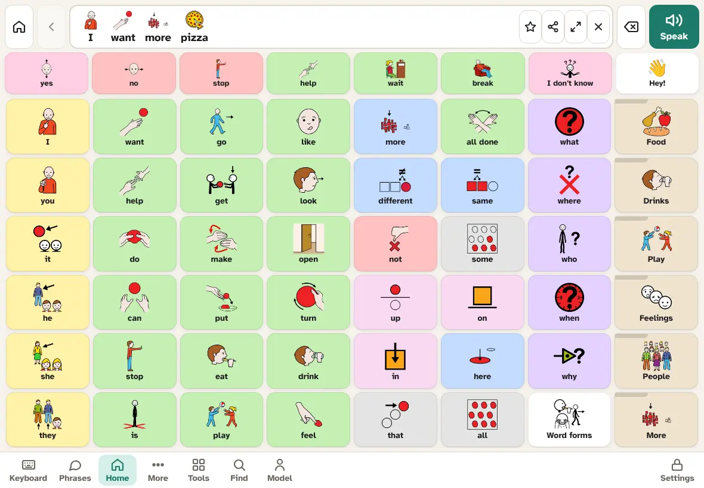
How to read this guide
You don't need to read it all. Start with the quick start, then come back when you need something. Some tips:
- Words in bold are the names you see on the screen, such as Speak or Boards & words.
- An arrow means “then tap”. Settings → Backup → Save backup file means: open Settings, tap the Backup panel, then tap Save backup file.
- A label like Android app means a feature only works there.
- “The person” means the person who uses AACFree to communicate. “You” means the parent, carer, teacher or therapist helping them.
- On a phone, tap Contents at the top of the guide to jump to a section, or search for a word.
Quick start: your first sentence in 5 minutes
- Open AACFree. Go to aacappfree.com/app, or open the Android app. (To install it properly, see Getting AACFree.)
- Do the short setup. Choose a language, type the person's name (optional) and tap Next. Pick a layout: Phone core · 30 on a phone, Medium · 30 or Full core · 48 on a tablet. Tap Next, choose a voice, then Start talking. You can also tap Skip setup.
- Tap a few words. Tap I, then want. Each word is spoken and appears in the message bar at the top.
- Open a folder. Tap the Food folder, then pizza. AACFree goes back to the Home board by itself, ready for the next word.
- Speak the sentence. Tap the green Speak button. To remove the last word, tap the delete key (⌫) next to it. Hold it to clear the whole message.
- Find the safe words. The row just under the message bar is the quick bar: yes, no, stop, help, wait, break. It is always there.
- Find Settings. Bottom right. Hold it for 2 seconds to open it. That's where you edit boards and change everything else.
- Save a backup. In Settings → Backup, tap Save backup file once you have made changes, and keep the file somewhere safe.
The most important tip: use the app yourself while you talk to the person. Tap “want” as you say “want”. This is called modelling, and it is how people learn AAC.
2Getting AACFree
There are two ways to get AACFree. Both are free and both work offline.
- The web app at aacappfree.com/app. Add it to your home screen once and it opens full screen like a normal app. Use this on iPhone, iPad, computers and Chromebooks.
- The Android app (aacfree.apk). Best on Android phones and tablets: it has the device's own voices, automatic backups to a folder that survives uninstalling, and a few other extras.
iPhone and iPad (Safari)
- Open aacappfree.com/app in Safari.
- Tap the Share button (the square with an arrow pointing up).
- Scroll down and tap Add to Home Screen, then Add.
- From now on, always open AACFree from its icon on the home screen.
Important on iPhone and iPad: Safari can delete a website's saved data after about 7 days without a visit. Apps added to the home screen are treated differently and keep their boards. So use the home-screen icon, not a Safari tab, and save a backup file now and then.
Android phone or tablet (Chrome)
- Open aacappfree.com/app in Chrome.
- Tap Install when Chrome offers it. Or tap the ⋮ menu → Add to Home screen (or Install app) → Install.
- Open AACFree from its new icon.
On Android you can also use the Android app instead. Choose one, not both: they keep separate data.
Computer or Chromebook (Chrome or Edge)
- Open aacappfree.com/app.
- Click the install icon at the right end of the address bar (a screen with a down arrow). Or open the browser menu → Install AACFree. In Edge: Apps → Install this site as an app.
Chrome and Edge on a computer can also do automatic backups to a folder and automatic sync. Firefox and Safari can use AACFree too, but use manual backup and sync files instead.
Check that it works offline
- The first time, keep AACFree open for a minute or two on Wi-Fi. It saves everything it needs on the device (about 20 MB), including all 740 built-in pictures.
- To check: turn on airplane mode, then open AACFree from its icon. Your boards should appear and talking should work.
A few things do need the internet: searching for more pictures online (More (online) in the picture chooser), downloading a missing picture, and some online voices. Everything else, including reading words from a picture, works offline.
The Android app (APK)
AACFree isn't in the Play Store yet, so you install it from a file. This is safe and takes a minute.
- On the Android phone or tablet (Android 7 or newer), download aacfree.apk.
- Open the downloaded file. Android asks whether to allow Install unknown apps for your browser or file app. Allow it, then tap Install.
- Open AACFree from the app list.
Tip: turn on Android App pinning so AACFree can't be closed by accident. See Settings → Lock → Stay in the app. The Android Back button moves around inside AACFree and never closes it.
Updates
- Web app: updates arrive by themselves when you are online. AACFree waits to apply them until it is idle: never in the middle of a sentence, while Settings are unlocked or editing is on, or while a timer is running.
- Android app: download aacfree.apk again and install it over the old one. Don't uninstall first. Updating keeps all boards, photos, recordings and settings.
- You can see the version number at the bottom of Settings → Help & tips.
First-time setup
The first time AACFree opens, it asks a few questions. Every step can be skipped, and everything can be changed later in Settings.
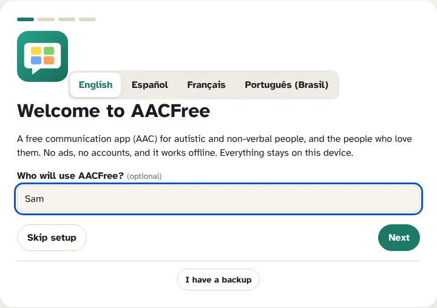
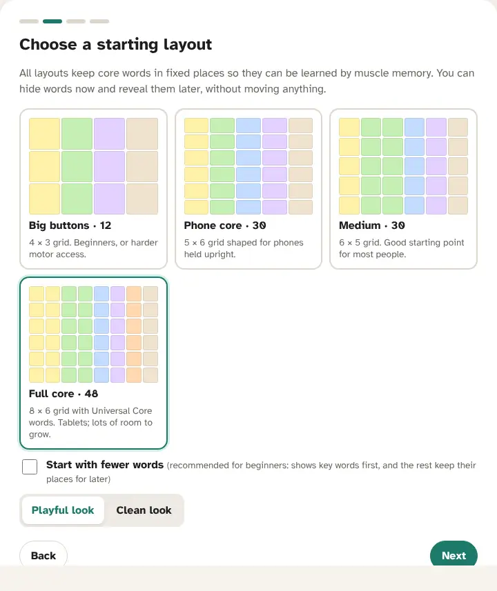
- Welcome. Choose the language: English, Español, Français or Português. Type the name of the person who will use AACFree (optional). Then tap Next, or Skip setup to start straight away with the suggested layout.
- I have a backup. Moving from another device? Tap I have a backup on the welcome step and choose your backup file. If the backup is locked with a passcode, type it and tap Open backup. Everything comes back as it was, and setup is done.
- Choose a starting layout. The layout decides how many words are on the Home board:
- Big buttons · 12: a 4 × 3 grid. For beginners, or harder motor access.
- Phone core · 30: a 5 × 6 grid shaped for phones held upright. Suggested on small screens.
- Medium · 30: a 6 × 5 grid. A good starting point for most people. Suggested on tablets.
- Full core · 48: an 8 × 6 grid with the Universal Core words. For tablets, with lots of room to grow.
- Start with fewer words (not offered for Big buttons). Recommended for beginners: only about 12 to 20 key words show on Home at first, plus all the folders. The other words are hidden, but keep their places for later.
- Playful look or Clean look. Clean uses simpler button shapes and suits teens and adults. You can change this later in Display.
- Pick a voice. Tap each voice to hear it. If you can, let the person choose. Device default uses the device's usual voice for that language.
- Settings. The last step explains that Settings sit bottom right, behind a 2-second hold. Tap Start talking.
3Moving from another AAC app
Coming from TD Snap, Proloquo2Go, TouchChat, LAMP, Cboard, CoughDrop or a paper board? There are two ways to bring boards across. Both keep every word in the same place, so the person keeps their motor plan, and neither changes anything you already have.
- From a photo or screenshot of the board. Works with any app, and with paper boards.
- From an Open Board Format file (
.obfor.obz), if the other app can export one.
From a photo or screenshot
AACFree finds the grid in the picture, reads every word with text recognition that runs on this device, and rebuilds the board with the same rows and columns. The picture never leaves the device, and no internet is needed.
- Get a picture of the board. In the other app, take a screenshot of one board page (on most tablets: power and volume-down together, or power and Home). For a paper board, take a photo from straight above. One picture makes one board; repeat for each folder.
- Open the importer. In AACFree, hold Settings for 2 seconds, then Boards & words → Import a board from a picture. (Or, in edit mode, + Category → Or import a board from a picture…)
- Pick the picture. Tap Take photo to use the camera, or Choose a picture for a screenshot from the gallery or files.
- Check the grid. AACFree draws its grid over the picture and says, for example, “Found 3 rows and 4 columns.” Toolbars, message bars and side panels are left out. Check that the dashed lines sit between the buttons:
- Drag the round handles on the four edges to move the edges (works with touch and a mouse).
- Use Rows and Columns − and + to fix the count.
- Move the edges a little opens arrow buttons to nudge each edge (for keyboard and switch users too).
- If AACFree couldn't find the buttons itself, it says so: drag the edges onto the board and set the rows and columns.
- Another picture starts again with a different picture.
- Tap Read the words. AACFree gets its word reader ready, then reads square by square (“Reading square 5 of 12…”). It takes a few seconds on a computer and can take a minute on an older tablet. Cancel goes back to the grid.
- Check the preview. It shows the board as it will look: each word with an AACFree picture and the colour of its word type (from the colour of the tile in your picture). A line at the top says how many words were found, and how many squares have a picture but no word yet.
- Pictures: keep AACFree symbols, or switch to Pictures from my screenshot to keep the pictures cut from your picture, for every square at once. Pictures from other apps may belong to the people who made them, so use them only for your family's own boards.
- Tap any square to fix it (see the next step).
- Fix a square. In Fix this square you can change the Word, choose the Picture (AACFree symbol, From my screenshot, or Choose another picture…), change the Word type (colour), tick Empty square to leave it empty, or tick Opens a folder to make it a folder (an empty folder board with that name, to fill in later, for example by importing that folder's own screenshot). Tap Done. A square left without a word stays empty.
- Name it and choose where it goes. Type a Board name. Under Where should it go? choose:
- A new folder on a board, and the board to Put the folder on. The folder goes in the first empty square. If that board is full, it goes on More; if More is full too, a new row is added at the bottom. Nothing else moves.
- A new profile, whose Home board is the imported board. Good when you are moving a whole system across. Your current profile isn't changed, and the new profile keeps this device's voice and access settings.
- Tap Save board. A snapshot is saved first, and you can press Undo on the message that appears. When you import from Boards & words as a folder, AACFree then opens the new board in edit mode so you can carry on.
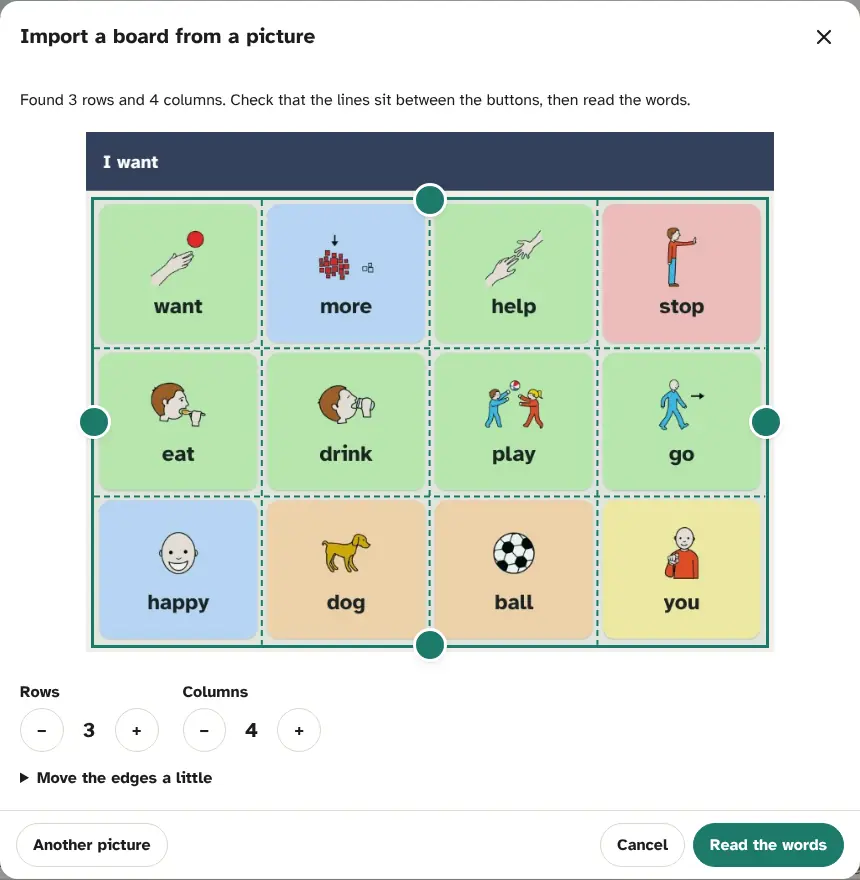
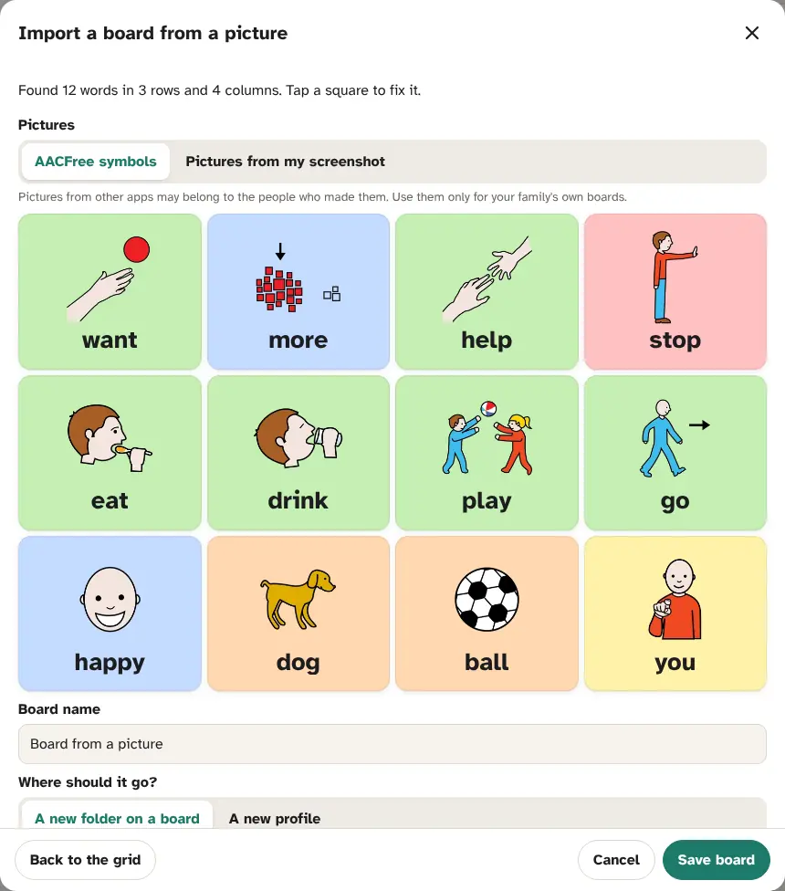
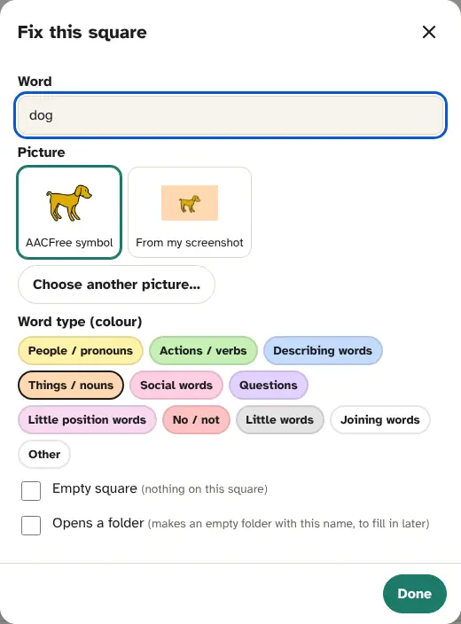
Tips for a good picture
- A screenshot works best. It is sharp, straight and evenly lit.
- For a photo: hold the camera straight above the board (not at an angle), in good light, with no glare or shadows, and fill the picture with the board.
- Show one page of the board, with the whole grid visible. It's fine if toolbars and the message bar are in the picture too.
- Make the words big: on a tablet screenshot, turn the other app's text size up if you can.
- Check the communication language first (Display → Language). Words are read in the board's language plus English.
What it can't do (yet)
- Boards with no gaps between the buttons are hard to split by themselves. Set the edges, rows and columns by hand.
- Photos taken at an angle make the grid a slanted shape, so the lines can't sit between every button. Take the photo again from straight above.
- Single letters (alphabet and keyboard pages) are mostly skipped, because one letter is too easy to misread. Only “I” and “a” (and a few one-letter words in Spanish, French and Portuguese) are kept. AACFree has its own keyboard instead.
- It reads words, not what buttons do. Folders become empty folders you fill in; actions such as “speak” or “clear” become plain words (delete them, or hide them).
- Pictures, numbers mixed with letters, and very small or decorative text may be misread. Always check the preview.
- A board can have at most 30 rows and 20 columns.
From an Open Board Format file (.obf / .obz)
Open Board Format is a shared file format for AAC boards. CoughDrop, Cboard and several other apps can export it. A .obz file holds a whole set of boards with their pictures; a .obf file is one board.
- In the other app, export the boards as
.obz(or.obf) and get the file onto this device (download, email, cloud drive). - In AACFree: Settings → Backup → Share boards (Open Board Format) → Import boards… and choose the file.
- The boards become a new profile, named after the board set, and AACFree switches to it. Nothing you had is overwritten, and a snapshot is saved first. The new profile keeps this device's voice and access settings (scanning, pointer and so on).
- Look through the boards, then edit anything that needs it. Switch back to your other profile in Profiles.
AACFree can also export: Export boards (.obz) saves the current profile's boards for other apps.
Back to top ↑4Restoring from a backup / moving to a new device
A backup file holds everything: all profiles, boards, photos, recordings, phrases and settings. You can restore one on the same device (after a mistake or a reset) or on a new device. Choose the way that fits:
- Restore a backup file you saved.
- Restore an automatic backup from the list.
- Restore the Android cloud copy from Google Drive, OneDrive or Dropbox.
- Open a passcode-locked backup.
- Start a new device from a backup with “I have a backup”.
- Join sync on a new device, to keep two devices in step.
- Undo a restore with a snapshot.
A restore replaces everything on this device with the backup: every profile. Before it does, AACFree saves the current version as a snapshot, so you can go back. This device keeps its own settings lock and PIN.
Restore a backup file
- Get the backup file (a
.jsonfile, for examplesam-backup-2026-11-17.json) onto the device: from email, a cloud drive, a USB stick or the Downloads folder. - Hold Settings for 2 seconds, then open Backup.
- Under Backup file, tap Restore from file… and choose the file.
- AACFree shows the file name and the profiles inside it, and asks Restore this backup? Tap Replace with backup.
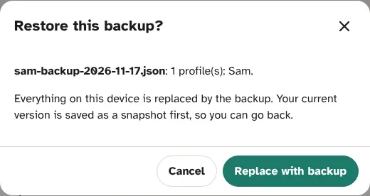
Restore an automatic backup
If automatic backups are on Android app Chrome / Edge on a computer:
- Settings → Backup → Automatic backup → Restore an automatic backup…
- The list shows the dated copies (newest first) and, on Android, the cloud copy. Tap Restore next to the one you want, then confirm.
- On a computer, AACFree may ask for permission to the backup folder again; allow it.
After AACFree is reinstalled on Android, Android may hide the backups the old app saved. They are still in Documents/AACFree: in the restore list, tap Choose a backup file… and pick one with the file picker.
Restore the Android cloud copy Android app
If you set up Add a cloud copy…, AACFree keeps one copy up to date in Google Drive, OneDrive, Dropbox or on an SD card.
- On the same device: the cloud copy is in the Restore an automatic backup… list, marked Cloud copy.
- On a new device: tap Open a backup from Drive or another app… (in Automatic backup), and choose the file in the system file picker.
Open a passcode-locked backup
If backups were locked with Lock backups with a passcode, AACFree asks for that passcode when you restore: This backup is locked. Type the backup passcode and tap Unlock. Upper and lower case matter. Without the passcode, a locked backup can't be opened by anyone, including us, so keep it written down somewhere safe.
Start a new device from a backup
- On the old device: Settings → Backup → Save backup file. Send the file to yourself (email, cloud drive) or copy it across.
- On the new device, install AACFree (see Getting AACFree) and open it.
- On the first screen, tap I have a backup and choose the file. If it is locked, type its passcode and tap Open backup.
- Everything comes back: profiles, boards, photos, recordings, phrases and settings. Check the voice in Settings → Voice, because each device has its own voices.
Already past the first screen? Use Settings → Backup → Restore from file… instead.
Join sync on a new device
To keep the new device in step with the others (rather than copying once), join your family's sync:
- Automatic sync Android app Chrome / Edge on a computer: Settings → Backup → Set up automatic sync… → No: choose the sync file another device made…, choose the shared file (for example in Google Drive), type the sync passcode and tap Start syncing.
- iPad, iPhone and Firefox: on another device, tap Send to another device…; on the new one, Receive from another device… and type the passcode.
If the new device now has an extra profile from its own first-time setup, delete it in Settings → Profiles.
Undo a restore
Restored the wrong file? Go to Settings → Backup → Automatic snapshots. Find the snapshot called Before importing a backup (or Before restoring a snapshot) with the right time, tap Restore, and confirm. You are back where you were.
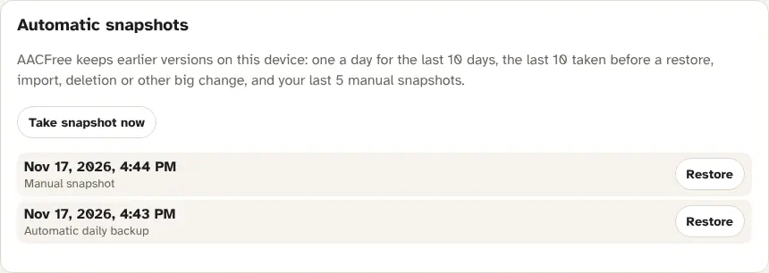
5The Talk screen
This is where the person talks. From top to bottom: the message bar, the quick bar, the board, and the bottom bar. Talking is never locked: every word is always available, whatever the settings lock is set to.
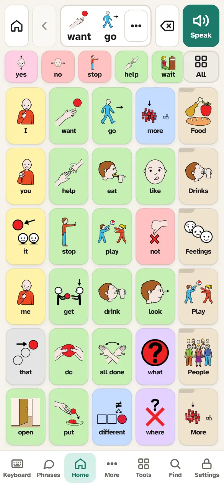
The board
The board is a fixed grid of buttons. Each button has a picture and a word. Tap a button and:
- its word is added to the message bar,
- the word is spoken (unless Speak each word when tapped is off),
- if you were inside a folder, AACFree goes back to Home so the next word is one tap away (you can turn this off: Go back to Home after picking a word in a folder).
Buttons never move on their own. Each word lives in the same place every day, so the person can learn where it is by feel, like typing without looking. This is called motor planning, and it is why AACFree hides words instead of deleting them, and adds new rows instead of shuffling.
Some special buttons do something instead of adding a word. The Word forms button on the Full core layout opens the word forms of the last word in the message.
Folders
Buttons that look like a folder (a tab at the top left, a beige colour) open another board: Food, Drinks, Play, Feelings, People and more. The More folder holds all 25 topic folders, from Animals to Weather. Folders are only one level deep, so it is hard to get lost.
- To go back, tap the Home button (house) or the Back arrow at the top left of the message bar. On Android, the Back button works too.
- The name of the open folder shows above the board.
- To hear the folder's name when it opens, turn on Say folder names when opened.
Previous and Next pages
When a board has more rows than fit on the screen, AACFree splits it into pages instead of scrolling. Big ◀ Previous and Next ▶ buttons sit at the bottom, always in the same place, and dots show which page you are on. A word is always on the same page, in the same spot.
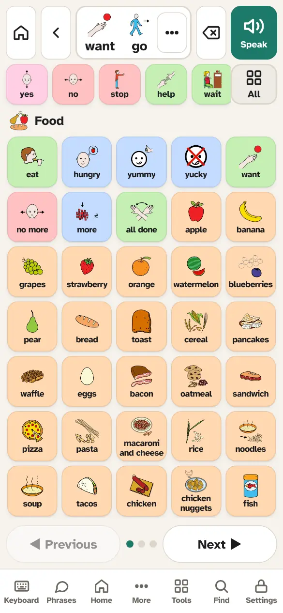
Bigger text or a bigger space between buttons can mean more pages. On a tablet held sideways, most boards fit on one page.
The message bar
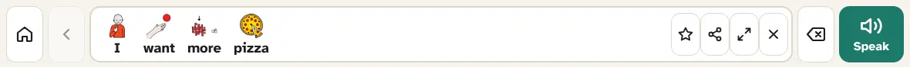
- Home (house) goes back to the Home board. Back (arrow) goes back one folder, or back to the board from another screen.
- The message shows each word with its picture. Tap a word in the message to change its form (go → went) or to remove just that word. Tapping an empty part of the bar speaks the message, like Speak.
- Speak says the whole message. While it is talking, the button turns into Stop. If Clear message after speaking is on, tapping Speak on the empty bar brings the last message back and says it again.
- Delete (⌫) removes the last word. Hold it to clear the whole message.
- Whenever a message is cleared, a Message cleared note appears with Undo. It stays until the next word is added, so nothing is lost by accident.
When there are words in the bar, four small tools appear:
- ★ Save as phrase saves the sentence in Phrases → Favorites.
- Share or copy text sends the words by text message, email or another app, or copies them.
- Show in big text opens Big text.
- × Clear message empties the bar (with Undo).
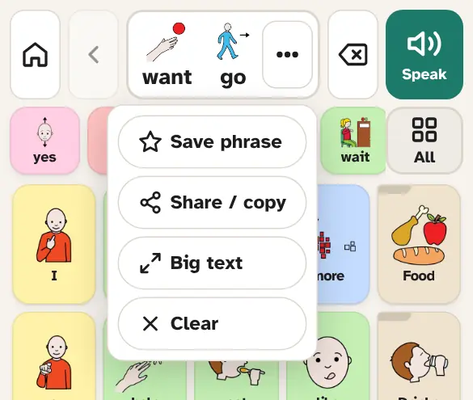
The quick bar
The row under the message bar holds the words a person must always be able to say: yes, no, stop, help, wait, break, I don't know and Hey!. They are on every screen except Settings: the board, the keyboard, Phrases and Tools.
- Hey! is spoken straight away to get someone's attention, without going into the message.
- On a narrow screen, an All button appears at the end of the row. It opens every quick word in one window, in the same order, so the protest words are one tap away on any phone.
- You can change the quick words: see Editing the quick bar. You can also turn the quick bar off in Display, but we don't recommend it.
Word forms
Words don't change by themselves in English. When the person wants another form, they ask for it:
- Long-press a button on the board (hold about half a second) to choose a form before adding it.
- Or tap a word in the message bar to change it after adding it. This window also has Remove word.
- Or, on the Full core layout, tap the Word forms button to change the last word.
AACFree offers verb forms (go → goes, going, went, gone), plurals (dog → dogs), and comparisons (big → bigger, biggest). The first choice is always the plain word, so you can go back. Forms never stack (no “goinged”). You can type your own forms for any button in the button editor.
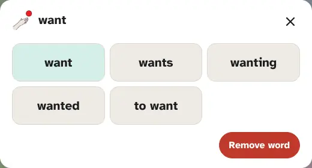
In Spanish, French and Portuguese, verbs can also change by themselves after a word like “I” or “you”. See Languages.
If Select on touch is on, long-press is off. Use the message bar to change forms instead.
The bottom bar
The bar at the bottom moves between screens. From left to right:
- Keyboard: type words, with prediction. See Keyboard.
- Phrases: saved sentences, recent sentences and scripts. See Phrases.
- Home: back to the Home board from anywhere.
- More: opens the More board (all the topic folders) in one tap. It only shows when the boards have a More board.
- Tools: schedules, timer, scales and more. See Tools.
- Find: find where a word lives. See Find a word.
- Model: only shows when the usage log or learned words are on. See Modelling mode.
- Settings (bottom right, with a lock): hold it for 2 seconds to open Settings. See Opening Settings.
The current screen is highlighted. Tapping Keyboard, Phrases or Tools again goes back to the board. While Settings are unlocked, Edit and Lock buttons also appear here. You can hide the Keyboard, Phrases and Tools buttons in Display.
Find a word
Tap Find and type a word. AACFree lists every button with that word and the path to it, such as Home › Drinks.
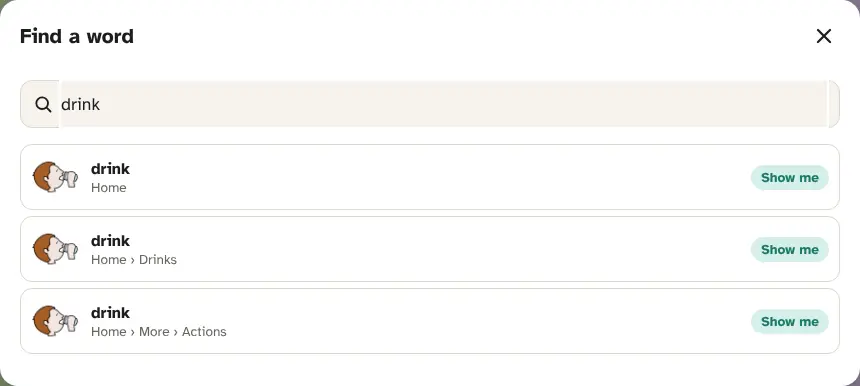
- Show me goes to Home, then opens each folder in turn, highlighting the buttons to tap. This shows the person (and you) the motor plan. It is a great way to model.
- Hidden words are found too, marked hidden for now. While Settings are unlocked, Reveal shows a hidden word on its board.
- If the word isn't on any board: Say it speaks it, Put in message adds it to the message bar, and (while Settings are unlocked) Add to a board… adds it as a new button.
Big text
Big text fills the screen with the message, as large as it fits. Use it in noisy places, or with someone who can't hear well. ↻ Flip turns the text upside down, so the person across the table can read it. Speak says it, and Close (or a tap anywhere) closes it.
The person can choose to show messages instead of speaking them: My voice → Show, don't speak.
Modelling mode
When the usage log or learned words are on, a Model button appears in the bottom bar. Turn it on (it says Modelling) while you demonstrate on the person's device. Your taps then aren't counted as theirs in Insights, and aren't learned by prediction. Turn it off when you hand the device back.
Colours (the Modified Fitzgerald Key)
Buttons are coloured by the kind of word, using a common AAC system called the Modified Fitzgerald Key. It helps people find words faster and build sentences in order (who → doing → describing → what).
- People / pronouns
- Actions / verbs
- Describing words
- Things / nouns
- Social words
- Questions
- Little position words
- No / not
- Little words
- Joining words
- Folders
You can show the colour as a fill, as a border only, or turn it off: Display → Colour coding. Each button's word type (and so its colour) can be changed, and you can give any button its own colour: see the button editor.
Hidden words
A hidden word leaves an empty gap on the board. It keeps its place, so when you show it again it is exactly where it will always be. This lets you start with fewer words and grow the vocabulary without moving anything.
- Hide or show one word in the button editor, or many at once with Show/Hide mode.
- Starter words only and Show all words in Boards & words hide or show many words at once.
- Babble mode in Display shows every hidden word for a while, so the person can explore.
6Keyboard and prediction
Tap Keyboard in the bottom bar to type. Typing is often faster for people who can spell, and it is in the same app as the symbols, so there is no switching apps mid-conversation.
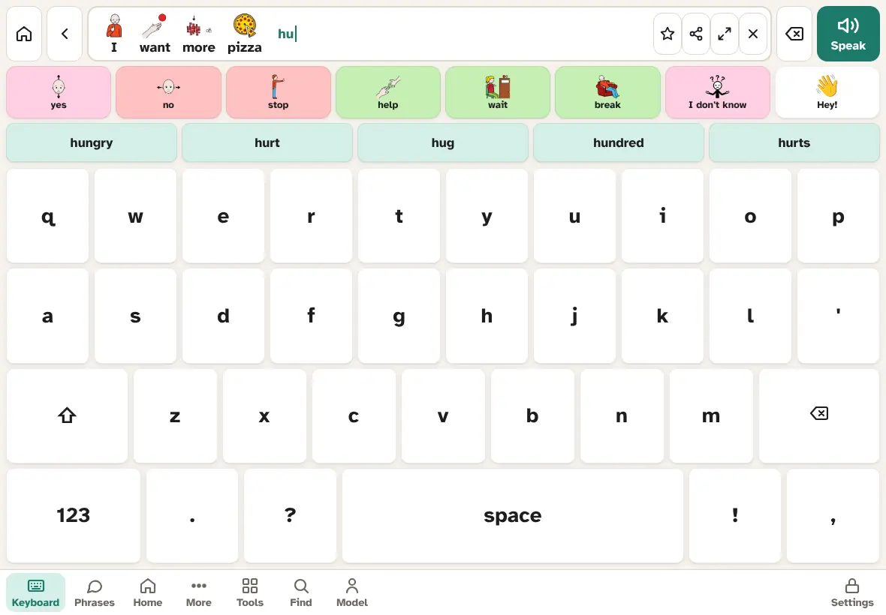
- The word you are typing shows in the message bar with a cursor. space adds it as a word (and says it, if Speak each word when tapped is on).
- The suggestions row above the keys offers whole words. Tap one to add it straight away. After a word is added, it suggests likely next words.
- ⇧ makes the next letter a capital. AACFree always writes “I” as a capital.
- ⌫ deletes a letter. With nothing being typed, it pulls the last word back so you can fix it.
- 123 switches to numbers and more punctuation; abc switches back. . ? ! , attach to the word before them.
- Then tap Speak as usual. Typed words mix freely with symbol words.
- Physical and Bluetooth keyboards work on this screen: letters type, Space adds the word, Backspace deletes and Enter speaks. (Not while switch scanning is on, because the keys are then the switches.)
How prediction works
Suggestions come from a built-in dictionary for the language plus every word on the person's boards. With Learn from what is typed and said turned on (Boards & words → Keyboard), AACFree also learns the person's own words and sentences, and suggests what they tend to say next. Learning is off by default, it stays on the device, and you can wipe it with Forget learned words.
The letter layout can be QWERTY (default), AZERTY or ABC (alphabetical, easier for some beginners). Each language has its own keys: ñ, ¿ and ¡ in Spanish; é, è, à, ç, â, û, ë, ï and œ in French; ã, õ and ç in Portuguese.
Back to top ↑7Phrases
Phrases are whole sentences said with one tap. Use them for things said often, for urgent needs, for scripts, and for anything the person wants to say fast.
Phrase folders
Tap Phrases in the bottom bar. Phrases open on folder cards, always in the same order, each with a picture and the number of phrases inside: Recent, then Needs, Feelings, Boundaries (such as “Please stop” and “I need space”), Chat, Questions and Emergency, plus any groups you add. A Favorites folder appears once you save a phrase with ★.
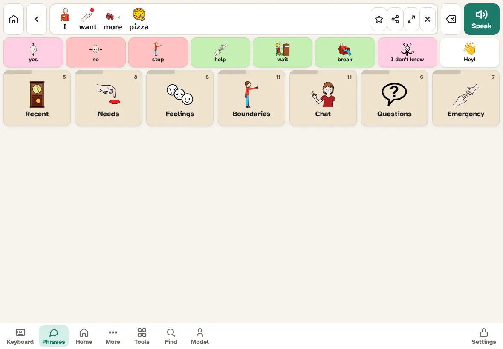
Tap a card to open it, then tap a phrase to say it. Tap Phrases (top left) or Android Back to return to the folders. A plain tap on a phrase always speaks it, even while Settings are unlocked.
The Emergency folder has phrases such as “I can't talk with my voice, so I use this app to communicate. Please be patient.” and “Please call my family.” Check these and add your own, together with the About me card.
Recent sentences
Recent lists the last sentences the person spoke (up to 50 shown), newest first, so they can be said again quickly.
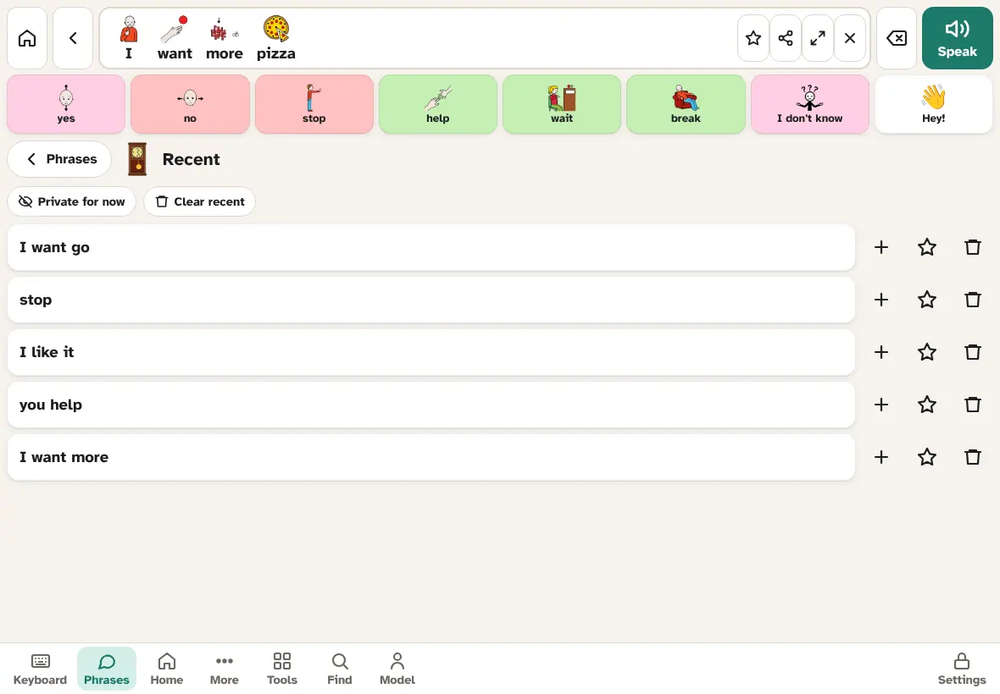
- Tap a sentence to say it again.
- + (Put in message bar) puts it in the message bar so it can be changed before speaking.
- ★ (Save to favourites) keeps it in Favorites.
- Bin (Delete this sentence) removes it, with Undo.
- Clear recent removes them all, with Undo.
- Private for now: while it is on, new sentences aren't kept and nothing is logged. It turns off when AACFree restarts.
Recent sentences belong to the person. They can delete them, clear them or go private without the settings lock. You can choose how long sentences are kept in Insights → Recent sentences.
Favourites
To save the message in the message bar, tap ★ (or Save phrase in the ⋯ menu on a phone). It goes into the Favorites folder, with the picture of its first word. The ★ in Recent does the same for a recent sentence.
Scripts and gestalts
Some people communicate in whole chunks of language, often lines from films, songs or things they have heard. These are called gestalts or scripts, and people who learn language this way are called gestalt language processors. A script like “To infinity and beyond!” can carry a real meaning for that person, such as “let's go!”.
Save scripts exactly as the person says them, in their own group (for example Scripts). Add a picture that means something to them, or record the line in a familiar voice. Scripts sit alongside the core words; they don't replace them.
Editing phrases
- Unlock Settings (hold Settings for 2 seconds), then go to Phrases. Or use Settings → Boards & words → Edit phrases, which takes you there with editing on.
- Tap Edit phrases (the pencil). Each phrase now shows a pencil.
- Tap a phrase to edit it, or Add phrase to add one. In the editor: Phrase or script (the words), Group (which folder), Picture, and an optional recorded voice (up to 15 seconds).
- On the folder cards, + Group adds a new phrase group. An empty group can be removed with Remove empty group.
- To delete a phrase, open it and tap Delete. You can press Undo straight after, and a snapshot is kept.
- Tap Done editing when you are finished.
8Tools
Tap Tools in the bottom bar for visual supports. Each tool speaks in the communication language. Tap Tools at the top left (or Android Back) to go back to the menu. The quick bar stays on screen in every tool.
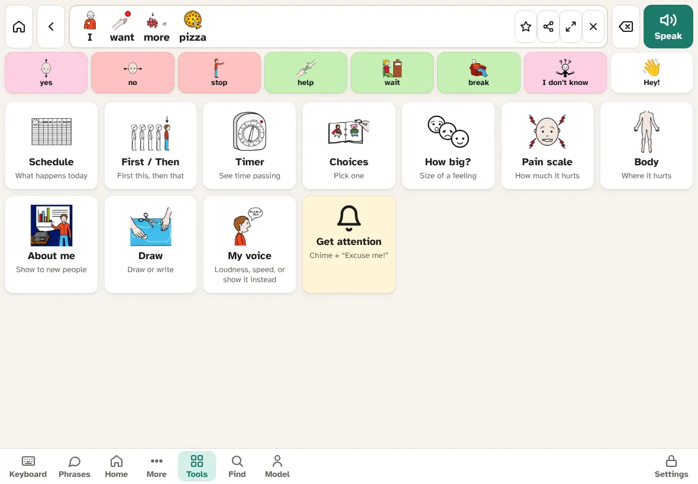
Schedule
A visual schedule: what happens today, one step at a time. AACFree comes with Morning and Bedtime schedules.
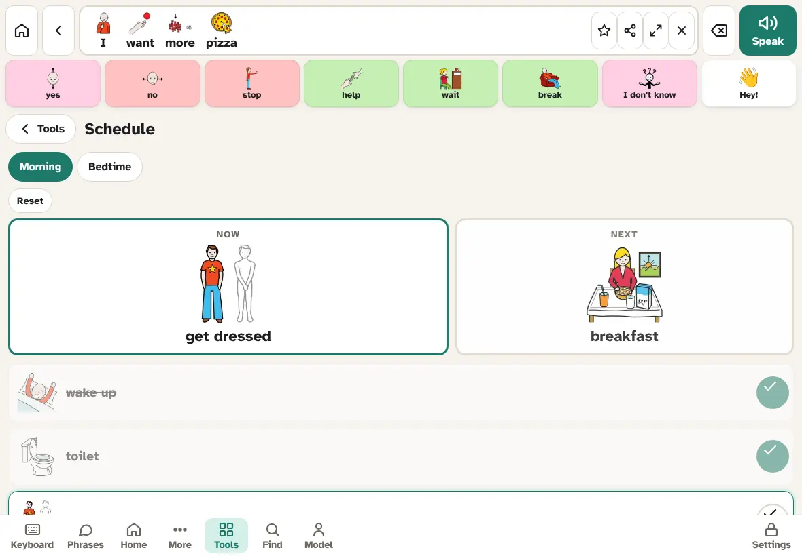
- Tabs at the top switch between schedules.
- Now and Next show the current and next step in big pictures.
- Tap a step to hear it. Tap its ✓ to mark it done (“…, finished!”) or not done.
- If the Now step has a length, a 5 min timer button (for example) starts the timer.
- When every step is done: 🎉 All done! and Start again. Reset clears the ticks at any time.
- Ticks reset by themselves each day, so the schedule starts fresh every morning.
To edit: unlock Settings, open the schedule and tap Edit (or use Settings → Boards & words → Edit schedules). Then you can:
- + New: add a schedule. Type its name in the box.
- Duplicate: copy this schedule, for example for a school-day version.
- Delete: delete the schedule (with Undo).
- Add step: search the person's words, or type any text and choose “use text”.
- Next to each step: move it up, edit it (its name, picture and How long? (minutes, optional)), or remove it (with Undo).
First / Then
Two big cards: First this, Then that. Helpful for transitions, such as “First bath, then play”.
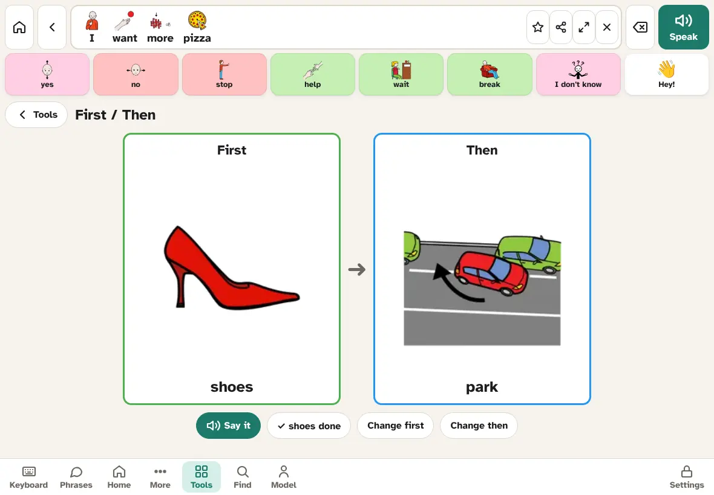
- Tap an empty card (or Change first / Change then) to choose a word. Search the person's words, or type any text.
- Say it says “First bath, then play.” Tapping a card says its word.
- ✓ bath done marks the first part as done and says “bath is done. Now play!”. Undo done takes it back.
- It remembers its cards when you leave and come back.
Timer
A visual countdown: a red disc that shrinks as time passes, so the person can see how much time is left.
- Choose a length: 1 min, 2, 3, 5 (the default), 10, 15, 20 or 30 min.
- Start, Pause, Reset, and +1 min while it runs.
- The timer keeps running on other screens. A small countdown chip shows in the corner; tap it to come back.
- At the end, a chime plays and AACFree says “Time is up! All done.”
Choices
A choice board with 2 to 6 options.
- Tap Add option and pick words or type text. Tap × on an option to remove it.
- Tap Ready – offer choices. AACFree asks “Which one do you want?”.
- The person taps one, and AACFree says “I choose …”.
- Change options goes back to setting up. The options are remembered.
How big?
A scale for how big a feeling is, from Very small (1) to Very big (5). Tapping a level says, for example, “This feeling is big.” It only says how big the feeling is; it doesn't name the feeling or ask for anything. The levels use a neutral tint and a meter that fills up, with no colour meaning good or bad. There are also Not sure, I need help. and I need a break. buttons.
Pain scale
“How much does it hurt?” Six faces from 0 No hurt to 10 Hurts worst. Tapping one says, for example, “My pain is 6 out of 10. It hurts even more.” Use it with Body to say where.
Body
“Where?” Tap a body part (head, eyes, ears, tummy, back, leg, foot and more: 20 in all), then what is wrong: hurts, is itchy, feels funny or is bleeding. AACFree says the sentence, such as “My knee hurts.” other place goes back to the body parts.
About me
A card to show or read to new people: teachers, doctors, first responders. By default it says “I use this app to communicate, because talking is hard for me…”. Read it aloud speaks the card.
To edit: unlock Settings, open About me and tap Edit (or Settings → Boards & words → Edit About me). There are two boxes: About me (read aloud), and Emergency contacts (shown, not spoken) for names and phone numbers.
Draw
A drawing pad for pictures or handwriting. Pick a colour, the eraser (⌫) or the pen size, and Clear to start again. Drawings aren't saved. Drawing works by touch only, so it is left out of switch scanning.
Get attention
One tap plays a chime, then says “Excuse me! I want to say something.” Useful when people around aren't looking.
My voice
The person's own controls for how AACFree speaks. They are never locked.
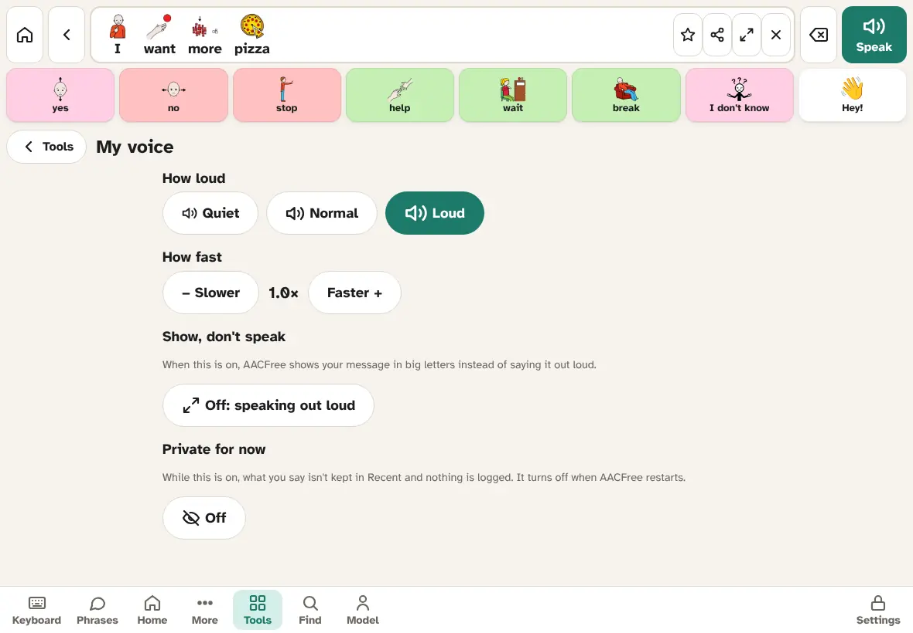
- How loud: Quiet, Normal or Loud. A short sample plays.
- How fast: Slower and Faster, in small steps.
- Show, don't speak: messages open in Big text instead of being spoken. For times when the person wants to communicate quietly.
- Private for now: what they say isn't kept in Recent and nothing is logged, until AACFree restarts.
Volume and speed here are the same settings as in Settings → Voice.
Hiding tools
To keep the Tools menu simple, hide tools the person doesn't use: Settings → Display → Tools shown. Every tool has a switch there, including About me and Get attention. Hidden tools keep their contents. To hide the whole Tools button, turn off Tools button in the same panel.
Back to top ↑9Settings, panel by panel
Settings is where you edit boards and change how AACFree looks, sounds and works. It is behind a lock, so the person can't change things by accident. Talking is never locked.
Each setting belongs to the profile that is open, except the lock and PIN (one for the whole device) and the backup and sync choices (kept on the device).
Opening Settings
- Find Settings at the bottom right, with a lock icon.
- Press and hold it for 2 seconds. It says Keep holding… while you hold. (With a PIN or math question lock, a short tap opens the question instead.)
- Settings opens. On the left (on a phone: at the top) are the panels: Boards & words, Symbols, Voice, Display, Access, Insights, Backup, Profiles, Lock and Help & tips.
- Below the panels: Edit boards goes straight to edit mode on the board, and Lock & return locks Settings and goes back to Home.
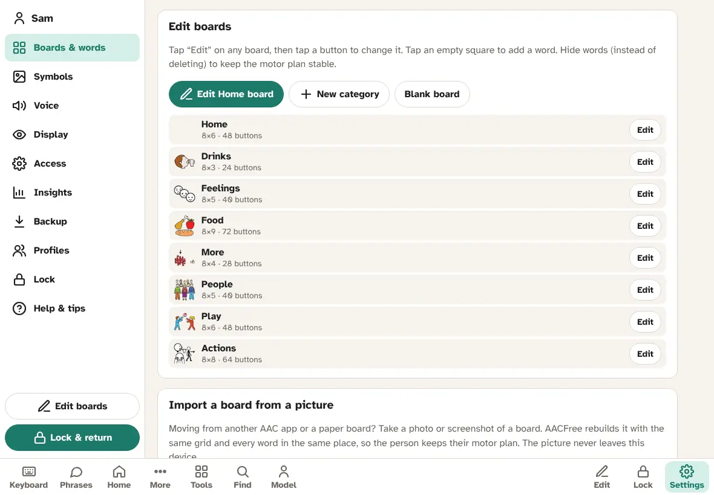
- Sliders need Save. When you move a slider (speed, text size, timings), the new value shows with Save and Cancel and what it was before. Nothing changes until you tap Save. Switches and choice buttons change straight away.
- Editing unlocked. While Settings are unlocked, you can leave Settings to edit boards, phrases and tools. A bar at the top says Editing unlocked, with a Lock button. Talking on the device doesn't keep it unlocked.
- Locks by itself. AACFree locks again after 5 minutes without Settings or editing activity, or when it has been in the background for more than a minute.
- Backup reminder. If you haven't saved a backup file for a month, Settings shows a reminder with Back up now.
The lock and the PIN
Choose the lock in Settings → Lock. There is one lock for the whole device, whichever profile is open, so switching or adding profiles can't get round it.
- Hold 2 seconds (default): enough to stop accidental taps.
- Math question: tap Settings, then type the answer to a multiplication such as 7 × 4 on the number pad.
- PIN: tap Settings, then type a 4 to 6 digit PIN and OK.
- No lock: a tap opens Settings. Only for adults who manage their own device.
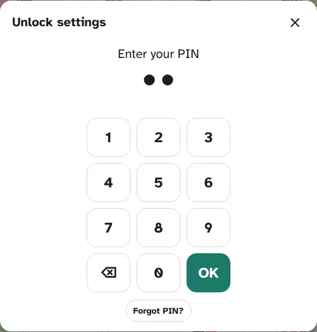
After a few wrong tries, AACFree asks you to wait a few seconds before trying again (up to a minute). If someone uses a keyboard or screen reader and can't hold, the hold lock asks a math question instead.
Forgot the PIN?
- Tap Settings, then Forgot PIN? under the number pad.
- Press and hold the big button for 10 seconds, until it says ✓ Held.
- Type the sentence shown: Reset my settings lock.
- Tap Remove PIN and open Settings. Only the PIN is removed (the lock goes back to Hold 2 seconds); no boards are touched. Set a new PIN in Settings → Lock.
Boards & words
| Setting or button | What it does and when to use it | Default |
|---|---|---|
| Edit Home board | Goes to the Home board in edit mode. | — |
| New category | Makes a new folder button with an icon on Home, optionally filled from a library category. See New category folders. | — |
| Blank board | Makes an empty board called “New board”, puts a folder button for it on the More board (or on Home, if there is no More board), and opens it in edit mode. A full board gets a new row; nothing moves. | — |
| Board list | Every board, with its size, number of buttons, hidden words, and “not linked” if no folder opens it. Edit opens that board in edit mode. | — |
| Import a board from a picture | Rebuilds a board from a photo or screenshot of another app or a paper board. See Moving from another AAC app. | — |
| Starter words only | Hides all but 12 to 20 key words on Home (such as I, you, want, more, help, stop, go, not, all done), plus all folders. Nothing moves. Good for a new user. Undo is in edit mode. | — |
| Show all words | Shows every hidden word on every board. A line below says how many words are hidden right now. | — |
| Print boards… | Choose boards to print as paper boards. See Paper boards. | Home and its folders ticked |
| Home layout | Big buttons · 12, Phone core · 30, Medium · 30 or Full core · 48. Changing layout replaces all boards with the built-in words for that layout (phrases, schedules and settings stay). A snapshot is saved first and Undo is offered. Avoid changing it once the person has learned where words are. | Chosen at setup |
| Letter layout | Keyboard keys: QWERTY, AZERTY or ABC (alphabetical). | QWERTY |
| Learn from what is typed and said | Lets prediction learn the person's own words and sentences. Stays on the device. Turn on once the person types or speaks sentences regularly. | Off |
| Forget learned words (n) | Appears once words have been learned. Wipes them. | — |
| Edit phrases / Edit schedules / Edit About me | Under Edit other things: jumps to Phrases, the Schedule or About me with editing switched on. Settings stay unlocked until you lock them. | — |
Symbols
The Symbol library: every picture, in category folders. Search all pictures, open a category, add your own categories and symbols. See The symbol library.
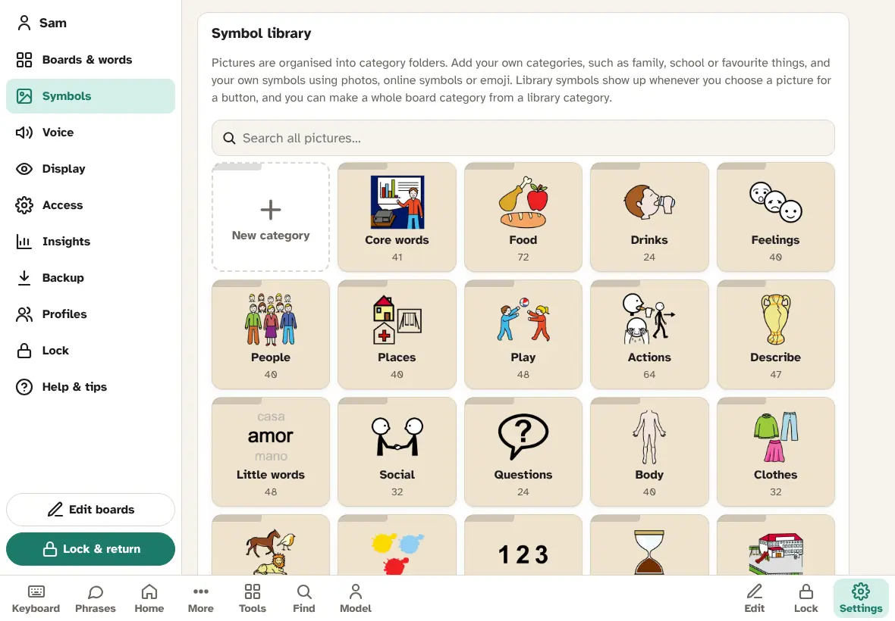
Voice
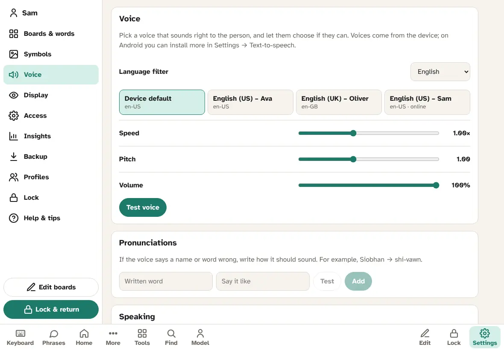
| Setting | What it does and when to change it | Default |
|---|---|---|
| Language filter | Shows voices for one language, or All languages. Starts on the communication language. | Communication language |
| Voice list | Every voice on the device. Tap one to hear “Hi, I'm …. This is my voice.” and choose it. Device default uses the device's usual voice for the language. Voices marked “online” need the internet. Let the person choose if they can. This choice stays on this device and doesn't sync. | Device default |
| Speed | How fast the voice talks, 0.50× to 1.80×. | 1.00× |
| Pitch | How high or low the voice is, 0.50 to 1.80. Not every voice can change pitch. | 1.00 |
| Volume | 10% to 100% of the device volume. The person can also change it in My voice. Stays on this device. | 100% |
| Test voice | Says “I want to go to the park, please.” | — |
| Pronunciations | Fix how the voice says a name or word: type the Written word and how to Say it like (for example Siobhan → shi-vawn), Test, then Add. Applies to everything spoken. Remove deletes one. | None |
| Speak each word when tapped | Says each word as it is tapped. Turn off for silent sentence building (only Speak talks). | On |
| Say folder names when opened | Says the folder's name when it opens. Helpful for people who rely on hearing (auditory feedback). | Off |
| Clear message after speaking | Empties the message bar after Speak. Tapping Speak on the empty bar brings the last message back. | Off |
| Go back to Home after picking a word in a folder | Fewer taps for the next word. Turn off if the person often picks several words from the same folder. | On |
| Show, don't speak | Under My voice (for the person): messages open in Big text instead of being spoken. The person can switch this themselves in Tools → My voice; Open My voice goes there. | Off |
Display
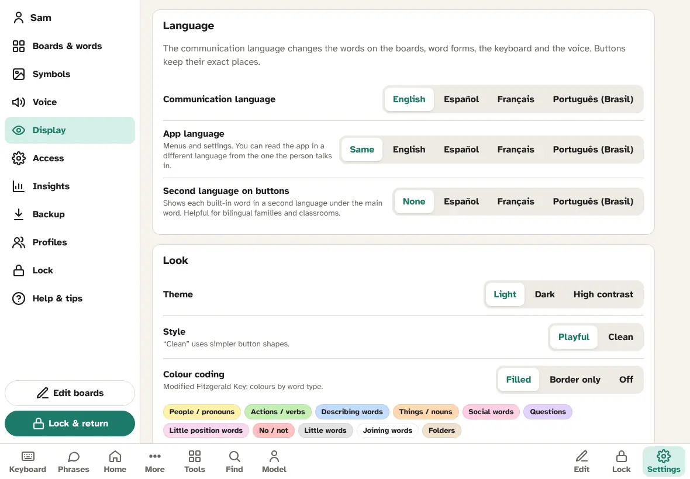
| Setting | What it does and when to change it | Default |
|---|---|---|
| Communication language | The language of the board words, word forms, keyboard and voice: English, Español, Français or Português. Switching asks first, translates boards, phrases and schedules, and keeps every button in its place. See Languages. | Chosen at setup |
| App language | The language of menus and Settings. Same follows the communication language. Use it if you read a different language from the one the person talks in. | Same |
| Second language on buttons | Shows each built-in word in a second language, small, under the main word. For bilingual families and classrooms. | None |
| Conjugate verbs automatically | Only for Spanish, French and Portuguese. After a word like “I” or “you”, a verb changes to match it (yo + querer → quiero). | On |
| Theme | Light, Dark or High contrast. Dark and high contrast put a light plate behind pictures so they stay clear. | Light |
| Style | Playful or Clean (simpler button shapes; good for teens and adults). | Playful |
| Colour coding | The Modified Fitzgerald Key colours: Filled, Border only or Off. A legend shows the colours. Border only can help people who find lots of colour busy. | Filled |
| Show words on buttons | Turn off to show pictures only (buttons without a picture still show their word). | On |
| Words above pictures | Puts the word above the picture instead of below. | Off |
| Letter case | As written, lower or UPPER. Some early readers find one case easier. | As written |
| Text size | 70% to 180%. Scales the text of the whole app. Bigger text can mean more pages on small screens. | 100% |
| Space between buttons | 0 to 20 px. More space helps people who hit the button next to the one they want. | 6 px |
| Show pictures in the message bar | Shows each word's picture in the message bar. | On |
| Quick bar (yes, no, stop, help…) | Shows the quick bar on every screen. Recommended: it keeps protest and help words reachable everywhere. | On |
| Keyboard button / Phrases button / Tools button | Show or hide these in the bottom bar, to keep things simple for a beginner. | On |
| Reduce motion | Turns off animations and smooth scrolling. | Off |
| Keep screen awake | Stops the screen going to sleep while AACFree is open. Important for switch and eye-gaze users, who don't touch the screen. Works in the Android app and in browsers that support it; otherwise the setting says so, and you can change the sleep time in the device settings. Stays on this device. | Off |
| Babble mode (show hidden words) | Shows every hidden word, so the person can explore all the vocabulary. Turn off to hide them again. | Off |
| Tools shown | A switch for each tool in the Tools menu: Schedule, First / Then, Timer, Choices, How big?, Pain scale, Body, About me, Draw, My voice and Get attention. Hidden tools keep their contents. | All on |
Access
Ways to use AACFree without precise tapping. How to use each one is explained in Access: touch, switches, pointers.
| Setting | What it does and when to change it | Default |
|---|---|---|
| Hold to select | The finger must stay on a button this long (up to 2 seconds) before it counts. For people who brush or bump buttons by accident. | Off |
| Ignore repeated taps | After a selection, ignore taps for this long (up to 2 seconds). For people who tap twice or have a tremor. | Off |
| Select on touch (instead of release) | Buttons work as soon as the finger touches, instead of when it lifts. Fastest for confident users. Long-press for word forms is off with this. | Off |
| Click sound | A click on each selection. | Off |
| Vibrate | A short buzz on each selection, on devices that can. | On |
| Setting | What it does and when to change it | Default |
|---|---|---|
| Pointer | Off, Dwell (mouse / eye tracker), Head pointer (camera) or Eye gaze (camera, experimental). Touch always keeps working. Stays on this device. | Off |
| Dwell time | How long to rest the pointer on a button to select it, 0.4 to 3.0 seconds. | 1.0 s |
| Rest button | Shows a Rest button the person can dwell on to pause selecting, and dwell on again to carry on. | On |
| Sensitivity | Head pointer only, 1 to 10. Higher means smaller head movements reach the edges of the screen. | 5 |
| Smoothing | Camera pointers, 0% to 90%. Higher is steadier but slower. | 60% |
| Long blink selects | Camera pointers. Closing both eyes for half a second selects what the pointer is on. | Off |
| Calibrate eyes / Re-calibrate eyes | Eye gaze only. A 9-dot calibration. See Eye gaze. | — |
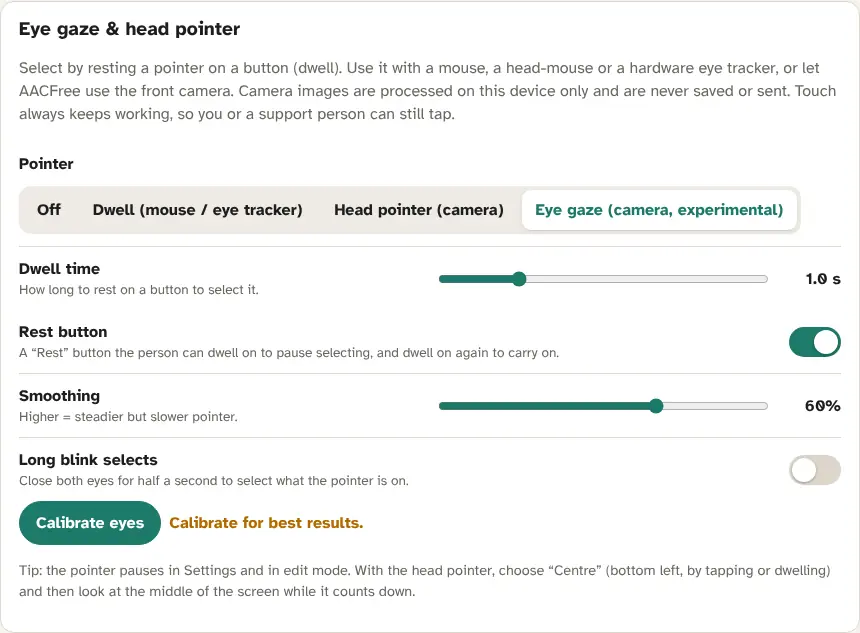
| Setting | What it does and when to change it | Default |
|---|---|---|
| Turn on scanning | Starts switch scanning on every screen except Settings and edit mode. Stays on this device. | Off |
| Mode | 1 switch (auto): the highlight moves by itself; press to choose. 2 switches (step): one switch moves, the other chooses. | 1 switch (auto) |
| Pattern | Rows, then buttons (choose a row, then a button in it) or One by one (every item in turn; simpler but slower). | Rows, then buttons |
| Scan speed | 1 switch only. How long each item stays highlighted, 0.5 to 4.0 seconds. Start slow and speed up as the person gets faster. | 1.5 s |
| Extra time on the first item | 1 switch only. When scanning starts again or enters a row, the first item stays highlighted a little longer (up to 3 seconds). | Off |
| Pause after this many rounds | 1 switch only. If nobody presses the switch, scanning rests after this many rounds (1 to 10). The next press starts it again. | Never |
| Switch acceptance time | The switch must be held this long to count (up to 1 second). Filters bumps and tremor. | Off |
| Ignore the switch after a selection | Stops a double press or a held switch from choosing again straight away (up to 2 seconds). | 0.5 s |
| “Leave row” step | With Rows, then buttons: after the last button in a row, an extra step goes back to choosing rows. Without it, scanning goes back to rows after two rounds of the row. | Off |
| Speak items while scanning (auditory scanning) | Says each item as it is highlighted. For people who can't easily see the screen, or who like to hear the choices. | On |
| Use a different voice for scan cues | Cues sound softer and higher, so they are easy to tell apart from what the person says. | Off |
| Your switch / Select switch | The key the switch sends to choose. Set key… then press the switch to assign it; Use default goes back. | 1 switch: Space, Enter or arrows. 2 switches: Enter |
| Next switch | The key that moves the highlight (2 switches). | 2 switches: Space or arrows |
| Setting | What it does and when to change it | Default |
|---|---|---|
| Colour | The colour of the scanning, pointer and Find word highlight: theme colour (A), orange, yellow, pink, light blue, blue or green. A black and white edge keeps it visible on every button colour. | Theme colour |
| Thickness | 2 to 14 px. A preview shows how it looks. | 5 px |
Insights
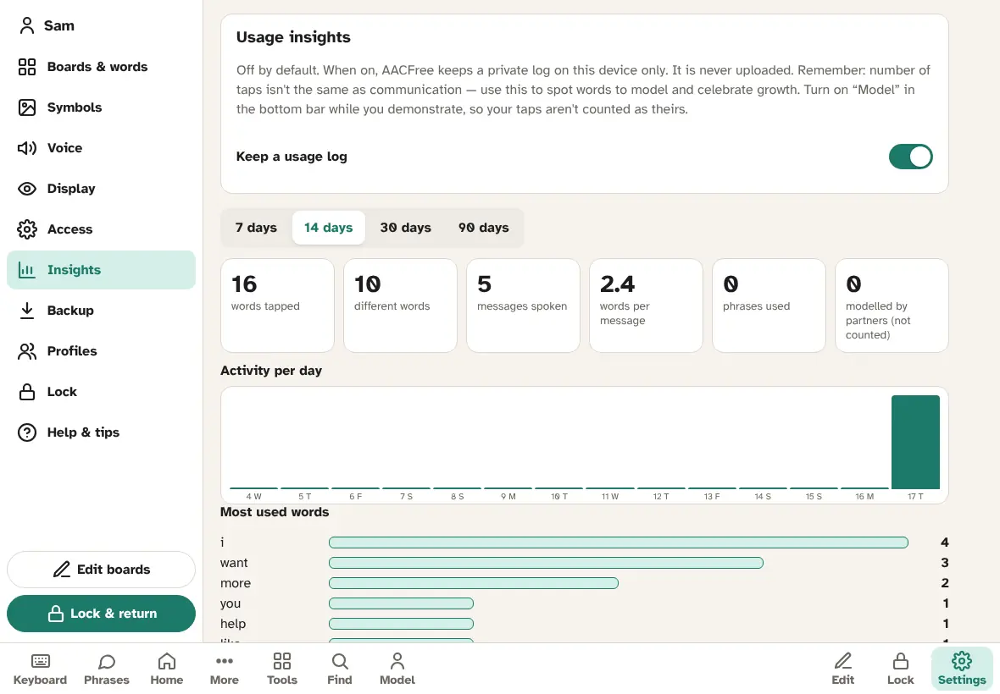
| Setting | What it does and when to change it | Default |
|---|---|---|
| Keep a usage log | Keeps a private log of words and messages on this device only. Then Insights shows, for the last 7, 14, 30 or 90 days: words tapped, different words, messages spoken, words per message, phrases used, and taps modelled by partners (not counted); activity per day; most used words; new words in this period; and recent messages. See Insights and privacy. | Off |
| Export CSV for a therapist | Saves the whole log as a spreadsheet file to share with your speech therapist. | — |
| Delete log | Deletes the log for this profile from this device, after a check. It can't be undone. | — |
| Keep recent sentences | How long Recent sentences are kept: Always, Until AACFree restarts, or Don't keep (which also clears what is there, with Undo). | Always |
| Clear recent | Clears Recent now, with Undo. | — |
Backup
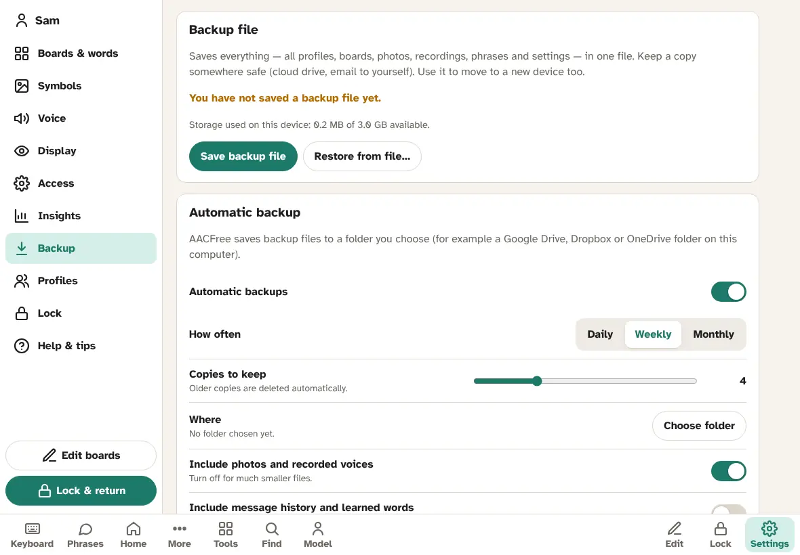
| Setting or button | What it does and when to use it | Default |
|---|---|---|
| Save backup file | Saves everything in one file: all profiles, boards, photos, recordings, phrases and settings. On the web it downloads; on Android it saves and opens the share menu. Shows the date of the last backup file and the storage used. | — |
| Restore from file… | Replaces everything with a backup file, after a snapshot. See Restoring from a backup. | — |
| Automatic backups | Saves dated backup files by itself. Android app Chrome / Edge on a computer | On |
| How often | Daily, Weekly or Monthly. | Weekly |
| Copies to keep | 1 to 12. Older copies are deleted automatically. | 4 |
| Where | Android: Documents/AACFree on the device, which survives uninstalling. Add a cloud copy… also keeps one copy in Google Drive, OneDrive, Dropbox or on an SD card (Change cloud file, Remove). Computer: Choose folder, for example a Google Drive or Dropbox folder. | Android: Documents/AACFree. Computer: none yet |
| Include photos and recorded voices | Turn off for much smaller files. Also applies to Save backup file. | On |
| Include message history and learned words | Turn on to back up Recent sentences and learned words. Off for more privacy. Also applies to Save backup file. | Off |
| Lock backups with a passcode | Encrypts backup files. Type a backup passcode (6 or more characters) and Save passcode. You need it to restore, so write it down. The passcode stays on this device. Also applies to Save backup file. | Off |
| Back up now / Restore an automatic backup… / Open a backup from Drive or another app… | Make a backup now, pick one of the automatic copies to restore, or (Android) open any backup file through the system file picker. | — |
| Sync between devices (encrypted) | Keeps devices in step. See Sync across devices. | Off |
| Automatic snapshots | Earlier versions kept on the device. Take snapshot now, or Restore one. See Snapshots. | Always on |
| Export boards (.obz) / Import boards… | Open Board Format, to share boards with other AAC apps. See Open Board Format. | — |
Profiles
| Setting or button | What it does | Default |
|---|---|---|
| Name (This person) | The name of the open profile. It shows at the top of Settings and in the voice sample. | From setup |
| Profiles list | Every profile on the device. Switch opens another profile; Delete removes one (after a check, with a snapshot first). | — |
| + Add profile | A new profile with its own Name and Layout. | Medium layout |
More in Profiles.
Lock
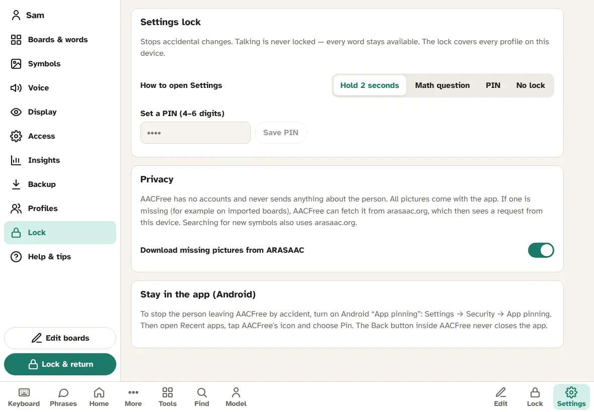
| Setting | What it does and when to change it | Default |
|---|---|---|
| How to open Settings | Hold 2 seconds, Math question, PIN or No lock. Covers every profile on the device. See The lock and the PIN. | Hold 2 seconds |
| Set a PIN / Change PIN | 4 to 6 digits, then Save PIN. Saving a PIN also switches the lock to PIN. Choose PIN if the person has learned to hold the button. | No PIN |
| Download missing pictures from ARASAAC | All pictures come with the app. If one is missing (for example on imported boards), AACFree fetches it from arasaac.org, which then sees a request from this device. Turn off to never fetch pictures. | On |
| Stay in the app (Android) | How to turn on Android App pinning: Android Settings → Security → App pinning; then open Recent apps, tap AACFree's icon and choose Pin. | — |
Help & tips
A link to this Full user guide, the Getting started tips (see Tips from AAC research), a short How to… list, and About AACFree with the credits and the version number.
Back to top ↑10Editing boards
You can change any button: its word, picture, colour, voice and what it does. Before you start, read motor planning: try to add and reveal words rather than move them.
Edit mode
To start: unlock Settings and tap Edit boards (or Boards & words → Edit Home board, or Edit next to any board). While Settings are unlocked you can also tap Edit in the bottom bar on any board.
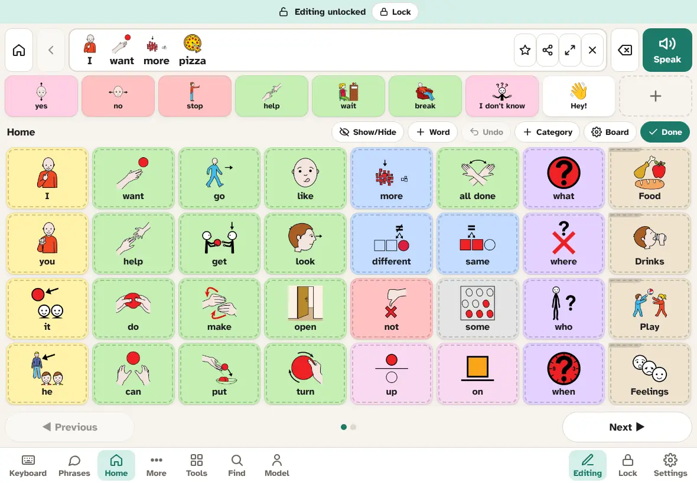
In edit mode, tapping a button opens it for editing instead of speaking it, and empty squares show a +. The toolbar above the board has:
- Show/Hide: hide or show words with one tap each (Show/Hide mode).
- + Word: add a word quickly (+ Word).
- Undo: undo the last change (Undo).
- + Category: a new folder (New category folders).
- Board: the board's name and size (Board settings).
- Done: leave edit mode.
You can open folders while editing: edit a folder button and tap Open folder →. If some boards aren't linked from any folder, a note on Home says so; find them in Settings → Boards & words.
The button editor
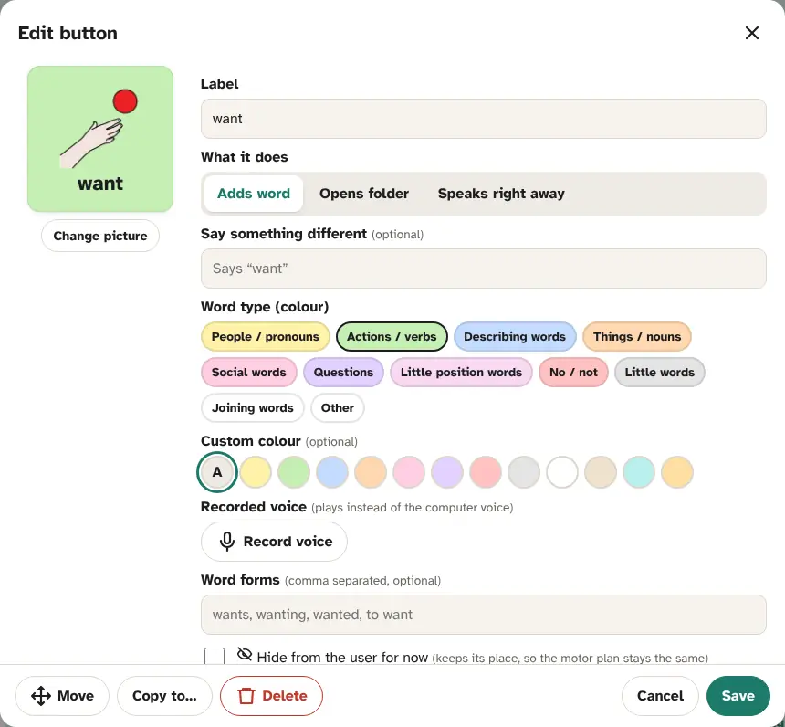
Tap a button in edit mode (or an empty + square for a new one):
- Picture: tap the preview or Change picture to choose from the library, online symbols, emoji or a photo (see The symbol library). For a new button, a matching picture is suggested as you type.
- Label: the word on the button.
- What it does: Adds word (normal), Opens folder, or Speaks right away (says it without adding it to the message, like “Hey!”).
- Folder to open (for Opens folder): an existing board, or + New empty folder called “…”. Then tap the new folder and add words.
- Say something different (optional): what is spoken and added, if different from the label. For example, a label “Grandma” that says “Nana Rose”.
- Word type (colour): sets the Fitzgerald colour and helps word forms.
- Custom colour (optional): any colour of your own; A goes back to automatic.
- Recorded voice: Record voice plays your recording instead of the computer voice (up to 15 seconds). Play, Re-record or Remove.
- Word forms (comma separated, optional): your own forms for long-press, for example “went, going”. Leave empty for the automatic ones.
- Hide from the user for now: keeps its place, so the motor plan stays the same (Hide instead of delete).
At the bottom: Open folder → (folders), Move, Copy to… (puts a copy in the first free square of another board, adding a row if it is full), Delete, Cancel and Save.
If you rename a built-in word, it becomes your own word: a language switch keeps your label instead of translating it.
Moving buttons
- In edit mode, tap the button, then Move.
- “Now tap where it should go”: tap the new place. The two buttons swap places.
Moving changes where the person finds a word. Do it early, or rarely, and model the new place.
Hide instead of delete
Tap Delete and AACFree offers Hide instead. Hiding a word keeps its spot, so the person's muscle memory still works when it comes back. Deleting removes it for good (you can still Undo). Hidden buttons show with a crossed-out eye in edit mode, and as a gap when talking.
Show/Hide mode
To grow vocabulary step by step: in edit mode tap Show/Hide (“Tap words to hide or show them”), then tap words to hide or reveal them, one tap each. Reveal 5 more shows the next five hidden words on this board. Tap Done hiding when finished. Folders and action buttons can't be hidden this way.
+ Word
The quickest way to add a word: tap + Word, type the word (a picture is suggested; tap it to change it), choose the board in Put it on, and tap Add word. It goes in the first empty square. If the board is full, a new row is added at the bottom, so nothing else moves. Find a word can also add a missing word: Add to a board….
New category folders
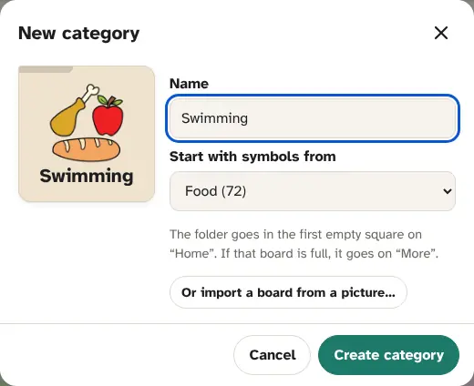
- In edit mode tap + Category (or Settings → Boards & words → New category).
- Type a Name (for example Soccer, Grandma's, Minecraft) and tap the preview to choose an icon.
- Start with symbols from: Nothing (empty folder), or a library category to fill the new board with its pictures straight away.
- Tap Create category. The folder goes in the first empty square of the board you are on; if that board is full, it goes on More; if More is full too, a new row is added.
The same window has Or import a board from a picture… (see Moving from another AAC app).
Board settings and size
In edit mode, tap Board:
- Name: the board's name.
- Columns (1 to 12) and Rows (1 to 14), with − and +. Buttons keep their row and column when you resize, so the motor plan stays the same. If shrinking would remove buttons, AACFree warns you; consider hiding them instead.
- Delete folder (not on Home): removes the folder and its words from every board, after a check. Undo works, and a snapshot is kept.
Editing the quick bar
In edit mode, tap a quick-bar word to edit it in the button editor (quick-bar buttons can't open folders), or tap the + at its end to add one. Delete removes it from the quick bar. Keep yes, no, stop, help and break there.
Undo
Undo in the edit toolbar takes back board changes one at a time: edits, moves, hides, new words and folders, resizes. Many other actions show a message with Undo for a few seconds (deleting a phrase, schedule or folder, changing layout, clearing the message). For bigger mistakes, use snapshots.
Paper boards
A paper copy is a low-tech backup for the bath, the pool, a flat battery or a broken screen.
- Settings → Boards & words → Print boards…
- Tick the boards to print (Home and its folders are ticked to start with), then tap Print boards.
- On the web, a print view opens: tap Print. Print in colour, landscape, and laminate for durability. The quick bar is on every page.
- On Android, the boards are saved as a web page. Open it in Chrome and choose Print, or send it to a computer.
Import a board from a picture
Rebuild a board from a photo or screenshot of another AAC app or a paper board, with every word in the same place. The full steps, tips and limits are in Moving from another AAC app.
Back to top ↑11The symbol library
AACFree comes with about 740 ARASAAC pictures built in, so it works offline. They are organised into category folders, each with an icon: Core words, Food, Drinks, Feelings, People, Places and the other topics. Your family can add its own categories and pictures. The library is shared by every profile on the device.
Browsing the library
Open Settings → Symbols. Tap a category folder to see its pictures, or type in Search all pictures…. All categories goes back. The same library appears whenever you choose a picture for a button (the Symbols tab).
Built-in pictures can't be changed. Tap one to see it, then Save a copy to a category if you want to rename it or give it another word type.
Adding your own categories and pictures
- In Settings → Symbols, tap New category. Give it a name (for example Grandma's house, Soccer, My toys) and tap the folder to choose an icon. Tap Save.
- In a category, tap Add symbol. Choose a picture, type the Word, check the Category and the word type (its colour on buttons), and tap Save.
- Your own categories and pictures are marked “yours”. Tap one of your pictures to edit or delete it; tap Edit in your category to rename it or delete it. Deleting a category doesn't change buttons already on boards.
You can make a whole board folder from a library category: see New category folders.
Choosing a picture
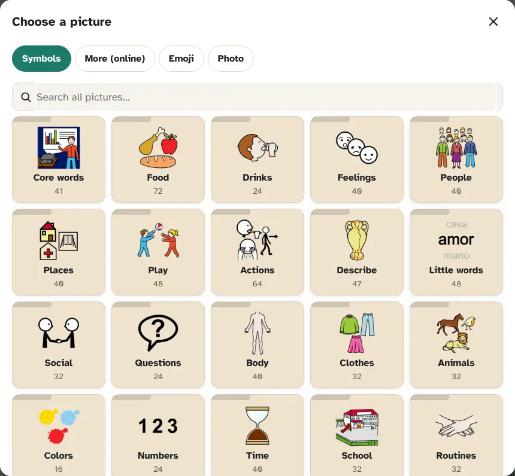
- Symbols: the library, with search.
- More (online): searches thousands more ARASAAC pictures on arasaac.org. Needs the internet. The picture you choose is saved on the device, so it then works offline.
- Emoji: a set of emoji.
- Photo: Take photo with the camera, or Choose from gallery. Real photos of the person's own people, places and things are often the easiest to understand.
- No picture: a word-only button.
On the More (online) and Photo tabs, Also save to my symbols keeps the picture in a library category, with a word, so you can use it again.
Missing pictures
Boards imported from other apps may use ARASAAC pictures that aren't built in. AACFree then downloads them from arasaac.org when it is online. To never fetch anything, turn off Download missing pictures from ARASAAC in Settings → Lock → Privacy.
Back to top ↑12Languages
AACFree speaks English, Español, Français and Português (Brasil). Each has the full app, all the board words, phrases and schedules, grammar, a keyboard with accents, prediction and voices.
- Communication language: the language the person talks in. It sets the board words, word forms, keyboard, voice, and everything the tools say. Change it in Settings → Display → Language.
- App language: the language of menus and Settings. A parent can read English menus while the person talks in Spanish, for example. Same follows the communication language. This choice stays on the device.
- Second language on buttons: shows each built-in word in a second language under the main word. Good for bilingual homes and classrooms.
- Automatic verb forms in Spanish, French and Portuguese (Conjugate verbs automatically, on by default): after a subject such as “yo”, “je” or “eu”, a verb changes to match: yo + querer → quiero, yo + gustar → me gusta, je + aimer → j'aime. Long-press a word for other forms. English never changes words by itself.
Switching the communication language
Choose the new language and confirm Switch. AACFree saves a snapshot, then translates board words, phrases and schedules in place: every button stays exactly where it was. Words you added or renamed yourself stay as they are. Switching back is exact, so you can try a language and return.
Back to top ↑13Access: touch, switches, pointers
Not everyone can tap accurately. AACFree has several ways in, all in Settings → Access. An occupational therapist can help you choose and set them up.
Touch
- Hold to select: for people who brush buttons by accident. Start around 0.3 to 0.5 seconds.
- Ignore repeated taps: for double taps or tremor. Start around 0.5 to 1 second.
- Select on touch (instead of release): the fastest, for confident users. It turns off long-press for word forms.
- Click sound and Vibrate give feedback that a press counted.
These apply to every button the person uses: the board, quick bar, message bar, bottom bar, Phrases and Tools.
Switch scanning
Scanning is for people who use one or two switches (big buttons they press with a hand, head, foot or another body part) instead of touching the screen. A highlight moves over the screen in order, and the person presses the switch when it reaches what they want. Bluetooth or USB switch interfaces that act like a keyboard work; so does a keyboard.
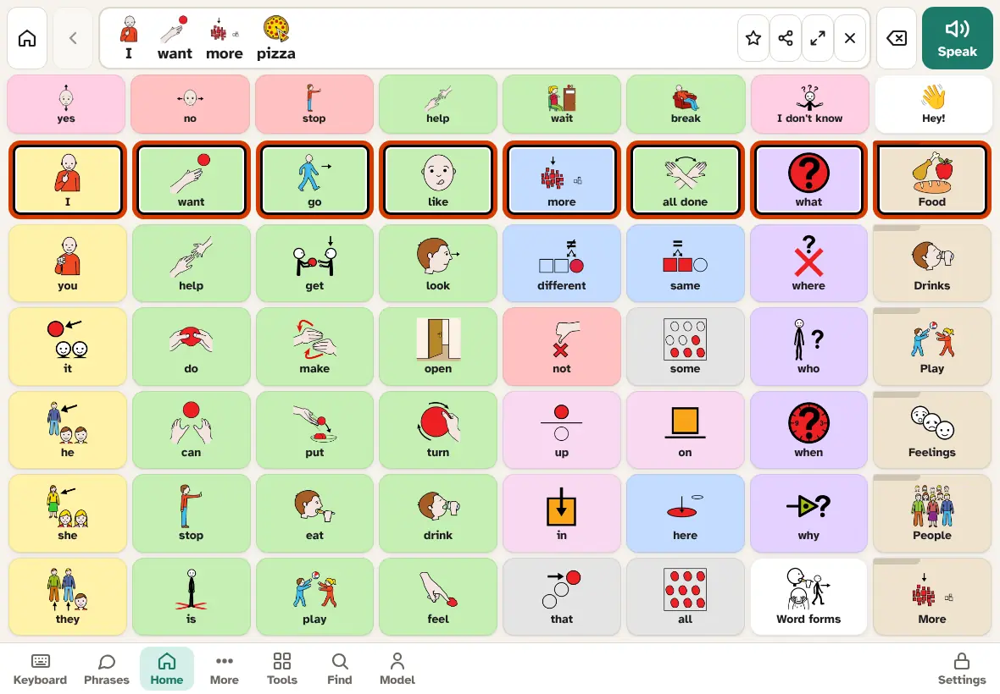
- Connect the switch. Check it sends a key such as Space or Enter (most switch interfaces do), or assign its key with Set key….
- Turn on Turn on scanning in Settings → Access → Switch scanning and choose the mode.
- Lock & return. Scanning starts on the Talk screen.
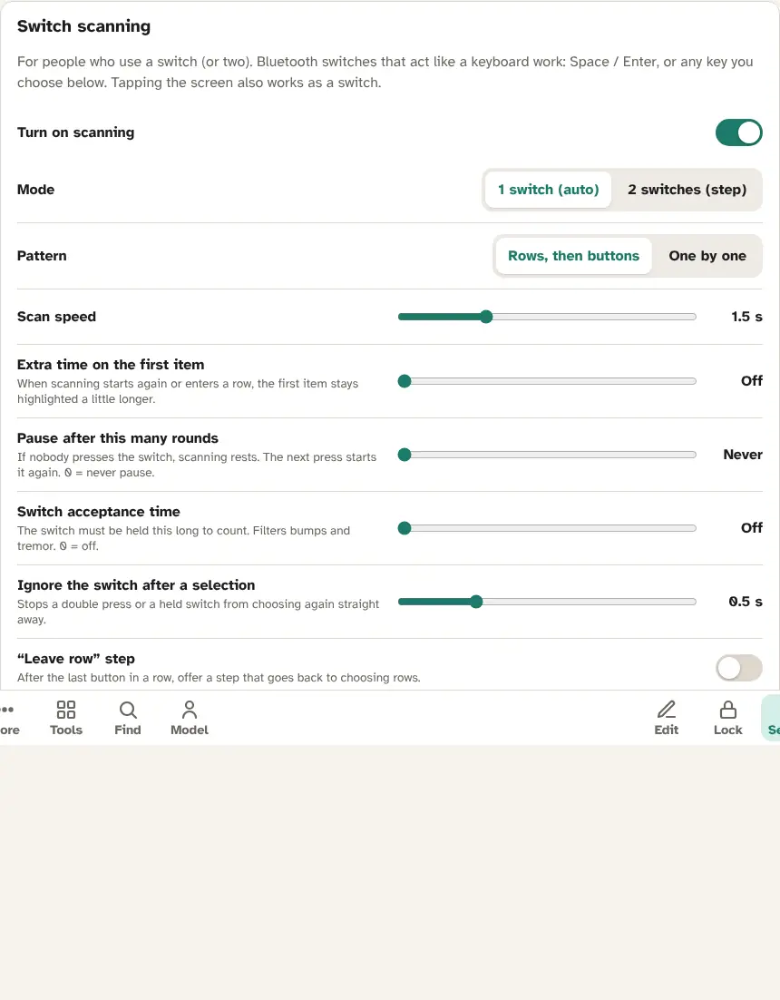
One switch (auto)
The highlight moves by itself, at the Scan speed. With Rows, then buttons, it first moves over groups (the message bar, the quick bar, each row of the board, the bottom bar). Press the switch when the right row is highlighted, then again when the right button is. After two rounds of a row with no press, it goes back to the rows (or use the “Leave row” step). With One by one, it visits every item in turn. Default keys: Space, Enter or the arrow keys. Tapping the screen also works as the switch.
Two switches (step)
One switch moves the highlight on (next, default Space or arrows), the other chooses (select, default Enter). Nothing moves until the person presses. On a touchscreen: a tap is next, a long tap (over half a second) is select.
Good to know
- Auditory scanning (Speak items while scanning, on by default) says each item as it is highlighted. It never cuts off what the person is saying. A different, softer cue voice is an option.
- A held switch counts once. Switch acceptance time ignores very short bumps, and Ignore the switch after a selection stops double choices.
- Everything the person uses can be scanned, including dialogs, Find word, the First/Then picker, the words in the message bar, the timer chip and the Undo on messages. A helper can still tap the screen directly. In Find word, a partner can tap the text box and type.
- Settings and edit mode are never scanned. To leave scanning, hold the Settings button for 2 seconds; with a PIN or math lock, the question appears. While Settings are unlocked, the Edit and Lock buttons can be tapped.
- Change the highlight's colour and thickness under Highlight.
Dwell (mouse, head-mouse or eye tracker)
With Pointer → Dwell (mouse / eye tracker), the person selects by resting the pointer on a button for the Dwell time. A ring fills around the pointer as it counts. Use it with a mouse, a trackball, a head-mouse, or a dedicated eye tracker that moves the mouse pointer.
- Dwell only starts after a real movement, and starts again after a new board opens, so nothing is chosen by accident.
- The Rest button (bottom left) pauses selecting; dwell on Resume to carry on. Turn it off with Rest button.
- The pointer pauses in Settings and in edit mode. Touch always keeps working.
- Browsers may not allow speech until someone has touched the screen or pressed a key once. If you see Tap once to turn the voice on, a helper taps it once.
Head pointer (camera)
With Head pointer (camera), AACFree uses the front camera to follow the person's head: small head movements move the pointer, and dwell selects. The camera images are processed on this device only, and are never saved or sent. The camera switches off while AACFree is hidden.
- Allow the camera when the browser or Android asks.
- Centre (bottom left, tap or dwell on it): then look at the middle of the screen while it counts down. Do this when the pointer drifts.
- Sensitivity: higher means smaller movements reach the edges. Smoothing: higher is steadier but slower.
- Long blink selects (optional): close both eyes for half a second to select.
- If the camera stops, tap Restart camera. Dwell stops while the face is lost.
Eye gaze (camera) Experimental
With Eye gaze (camera, experimental), AACFree estimates where the person looks using the front camera. Webcam eye gaze is approximate: it works best with large buttons (the Big buttons or Phone core layout). A dedicated eye tracker is much more accurate; use it with Dwell mode.
Calibrating
- In Settings → Access, choose Eye gaze (camera, experimental), then tap Calibrate eyes.
- Sit about an arm's length from the screen, with the face well lit from the front (not a window behind). Hold the device steady, or put it on a stand.
- Tap Start. A dot appears in 9 places in turn. Keep the head still, move only the eyes, and look right at each dot until it fills up.
- If the face is lost, the dot waits (“Looking for your face…”). After 8 seconds it skips that dot.
- When it works, AACFree says Eye gaze calibrated, or that it is approximate and larger buttons work best.
If calibration fails, it says why: the face wasn't seen at enough dots (face the camera with more light), or the dots couldn't be told apart (keep the head still and look right at each dot). Try again with Re-calibrate eyes.
Rest, Resume, Centre and Restart camera
- Rest: a real tap pauses everything, camera included; only a tap on Resume carries on. Resting hands-free (by dwell or switch) lets the person resume by looking at Resume for a long, deliberate moment (at least 2.5 seconds).
- Centre is for the head pointer.
- Restart camera appears if the camera stops or fails.
Seeing the screen
- Text size (70% to 180%) scales the whole app. See Display.
- Theme: Light, Dark or High contrast. Style: Playful or Clean.
- Colour coding filled, border only or off.
- Highlight colour and thickness for scanning, dwell and Find word (Access).
- Reduce motion turns off animations.
- Keep screen awake for people who don't touch the screen.
- A bigger layout (Big buttons · 12) or more Space between buttons makes targets larger.
14Voice and speech
Choosing a voice
AACFree uses the voices on the device. In Settings → Voice, tap a voice to hear it and choose it, then set Speed, Pitch and Volume and tap Test voice. The voice should sound right to the person: their age, their gender, their accent. Let them choose if they can.
- Android: install more voices in Android Settings → Text-to-speech (for example “Speech Services by Google” from the Play Store, then its voice data).
- iPhone and iPad: add voices in iOS Settings → Accessibility → Spoken Content → Voices. Enhanced voices sound much better.
- Computers: Edge and Chrome include natural online voices (marked “online”, which need the internet); the computer's own voices work offline.
- Each device keeps its own voice. It doesn't sync, because devices have different voices.
The person can make it louder, quieter, faster or slower themselves in Tools → My voice, or show messages instead of speaking them.
Pronunciations
If the voice says a name or word wrong, add a fix in Settings → Voice → Pronunciations: the Written word and how to Say it like, for example “Siobhan” → “shi-vawn”. Tap Test, then Add. It applies everywhere: buttons, typing and phrases.
Recorded voices
Any button or phrase can play a recording instead of the computer voice: a sibling saying a name, a parent's “I love you”, a favourite sound or script. In the button editor or the phrase editor, tap Record voice, speak (up to 15 seconds), and tap Stop. Play to check it, Re-record or Remove. Allow the microphone when asked. Recordings are saved on the device and included in backups (unless you turn photos and recordings off).
If speech doesn't work
AACFree never fails silently: it shows a message that says what to do.
- “Speech is not working on this device.” (Android app) Tap Install voices and install or update the text-to-speech engine and its voice data.
- “No voices are installed.” Add a voice in the device's text-to-speech settings, then open AACFree again.
- “This browser can't speak.” Use Chrome, Edge or Safari, or the Android app.
- “Tap once to turn the voice on.” Some browsers only allow speech after a first touch. Tap once.
- Check the device volume and silent switch, and the Volume in Settings → Voice and in My voice.
- Check that Show, don't speak isn't on in My voice.
- Choose Device default in Settings → Voice, in case a chosen voice was removed.
15Profiles
A profile is one person's AACFree: their boards, phrases, schedules, About me, voice and settings. Several people can share a device, such as siblings or a classroom tablet, each with their own profile.
- Add: Settings → Profiles → + Add profile. Type a Name, choose a Layout and tap Create. The new profile opens.
- Switch: Settings → Profiles, then Switch next to the profile. The open one is marked Active.
- Rename: change Name under This person.
- Delete: Delete next to a profile, then confirm. A snapshot is saved first.
- Copy a profile's boards: there is no Duplicate button. To start a new profile from someone's boards, use Settings → Backup → Export boards (.obz), then Import boards… with that file: the boards come in as a new profile. (Phrases, schedules and settings aren't copied this way.)
Things shared by every profile on the device: the settings lock and PIN (one for all, so switching profiles can't get round it), the symbol library, and the backup and sync choices. A backup file and sync include every profile.
Back to top ↑16Backups, snapshots and sync
AACFree saves every change straight away, on the device. On top of that there are four safety nets. To get data back, see Restoring from a backup.
The backup file
Settings → Backup → Save backup file saves everything in one file: all profiles, boards, photos, recordings, phrases and settings. Keep a copy somewhere safe (a cloud drive, or email it to yourself). It is also how you move to a new device. Settings shows when you last saved one and reminds you after a month.
- On the web the file downloads. On Android it is saved, then the share menu opens so you can send it to Drive, email and so on.
- The photos, message history and passcode choices under Automatic backup also apply to this file.
- Plain (unlocked) backups never contain the settings PIN.
Automatic backups Android app Chrome / Edge on a computer
AACFree can save dated backup files by itself, Daily, Weekly (default) or Monthly, keeping the newest copies (4 by default, up to 12). It checks when it starts, when it comes back to the screen, and every hour while open.
- Android app: files go to
Documents/AACFree. They stay there even if the app is removed. Add a cloud copy… picks a file in Google Drive, OneDrive, Dropbox or on an SD card through the system file picker; AACFree updates it on every backup. - Chrome or Edge on a computer: tap Choose folder and pick a folder, for example your Google Drive, Dropbox or OneDrive folder.
- iPhone, iPad, Firefox and Safari can't save files by themselves. Use Save backup file regularly.
- Include photos and recorded voices (on): turn off for much smaller files.
- Include message history and learned words (off): turn on to keep Recent and prediction in backups.
- Lock backups with a passcode (off): encrypts backup files. Set a passcode of 6 or more characters and write it down: without it, the backups can't be opened. The passcode stays on this device.
- Back up now makes one straight away. The last automatic backup and any problem are shown underneath.
Snapshots
Snapshots are earlier versions kept inside AACFree on this device, in Settings → Backup → Automatic snapshots. AACFree keeps:
- one a day for the last 10 days (“Automatic daily backup”),
- the last 10 taken before a big change: a restore, an import, changing the layout or language, deleting a folder, phrase, schedule, profile or library picture, and syncing changes from another device (always when there are conflicts),
- your last 5 manual snapshots (Take snapshot now).
Tap Restore next to a snapshot to go back to it. Your current version is saved as a snapshot first, so you can undo that too. Snapshots live on the device only: if the device is lost or the app removed, they go too. That's why the backup file matters.
Sync across devices
Sync keeps several devices in step, such as the person's tablet, a parent's phone and a school device, with no account and no AACFree server. Changes go through a file that is encrypted with a passcode only your family knows. Devices combine changes button by button: an edit on the phone and a different edit on the tablet are both kept, and deletions carry over.
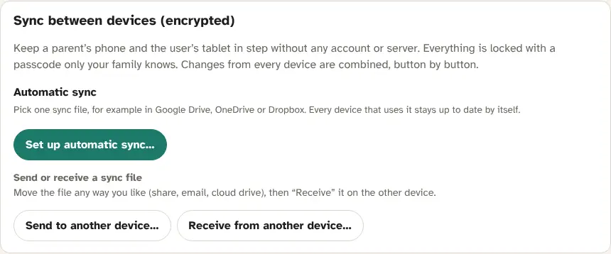
Automatic sync Android app Chrome / Edge on a computer
- On the first device: Set up automatic sync… → Yes: create a new sync file…. Choose a place every device can reach, such as a Google Drive, OneDrive or Dropbox folder.
- AACFree suggests a strong Sync passcode (or type your own, at least 8 letters or numbers; Make a new passcode suggests another). Write it down. Tap Start syncing.
- On each other device: Set up automatic sync… → No: choose the sync file another device made…, choose the same file, type the passcode and tap Start syncing.
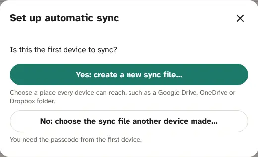
From then on, each device syncs when AACFree opens or comes back to the screen, about 45 seconds after an edit, and every 5 minutes while open. It never interrupts talking. The sync section shows Last synced, and lets you:
- Sync now.
- Rename this device (This device's name), shown on other devices, as in “3 changes from Tablet”.
- See Recent syncs and Show conflicts.
- Turn off automatic sync on this device. Nothing is deleted.
Send and Receive (any device, including iPad, iPhone and Firefox)
- On the device with the changes: Send to another device…. Check the passcode (a strong one is suggested), tick the Profiles to send, and tap Create sync file.
- Move the file any way you like: share, email, cloud drive. Tell the passcode separately; don't send it with the file.
- On the other device: Receive from another device…, choose the file, type the passcode and tap Unlock.
- Ready to sync shows what will change (or “Nothing new for this device.”). Tap Sync now. A snapshot is saved first.
Passcodes ignore upper and lower case, spaces and dashes when you type them.
What syncs, and what stays on each device
- Syncs: profiles (boards and every button, the quick bar, phrases and groups, schedules, About me, profile names, and most settings), the symbol library, recent sentences and learned words (combined, not overwritten), and profiles added or deleted.
- Stays on each device: the voice and volume, eye-gaze calibration, the app language, keep screen awake, the pointer mode and whether scanning is on, the settings lock and PIN, the sync passcode and file, backup choices and passcode, and the usage log.
Conflicts
If the same thing was changed on two devices before they synced (the same button edited on both, say), the newer change wins. AACFree lists it as a conflict, such as “Button “juice” on Drinks: kept the change from Tablet”, and saves a snapshot first. The other version is in Automatic snapshots if you need it.
Open Board Format (.obz)
Settings → Backup → Share boards (Open Board Format):
- Export boards (.obz) saves the open profile's boards for use in other AAC apps such as CoughDrop and Cboard.
- Import boards… brings in
.obzor.obfboards made elsewhere, as a new profile, so nothing is overwritten. See Moving from another AAC app.
Open Board Format carries boards only. Use a backup file to move everything.
Back to top ↑17Insights and privacy
AACFree has no accounts, no servers, no ads and no analytics. Boards, photos, recordings, settings and logs are stored only on the device.
The usage log (opt-in)
Some families and therapists like to see which words are used, to choose words to model and to celebrate growth. In Settings → Insights, turn on Keep a usage log. It is off by default, kept on this device only, and never uploaded. You can export it as a CSV file for a therapist (Export CSV for a therapist) or delete it (Delete log).
Remember: the number of taps isn't the same as communication. Turn on Model while you demonstrate, so your taps aren't counted as the person's.
Learned words
Learn from what is typed and said (in Boards & words) improves prediction with the person's own words. Off by default, on the device only, and Forget learned words wipes it.
The person's own privacy
- The person can delete a recent sentence, clear them all, or turn on Private for now, without the settings lock. Private for now pauses recent sentences, learned words and the usage log until AACFree restarts.
- You can keep recent sentences Always, Until AACFree restarts, or not at all (Don't keep).
- Backups leave out message history unless you include it.
When AACFree uses the internet
- Searching for more pictures (More (online)), and downloading a missing picture, contact arasaac.org. The second can be turned off in Settings → Lock → Privacy.
- Some voices are online voices, run by the device's speech service.
- The web app checks for updates.
- Sync and cloud backups write only to a file your family chooses, encrypted if you set a passcode.
Never sent anywhere: camera images for head pointer and eye gaze (processed on the device and never saved), pictures you import (words are read on the device), the passcodes, and the PIN. On Android, the system's own Auto Backup may include the app's data in the family's Google account backup; you can turn it off in Android settings. See also the privacy policy.
Back to top ↑18Tips from AAC research
AACFree was designed from what autistic AAC users, parents and speech therapists say works. These are the habits that help most. They are also in Settings → Help & tips.
- Model, model, model. Use the app yourself while you talk: tap “want” and “more” as you say them. People learn AAC the way babies learn speech, by seeing it used for months before they're expected to use it. You don't need to model every word: one or two key words per sentence is plenty. Find word (Show me) shows where words live.
- Presume competence. Assume the person understands more than they can show, and has things to say. Talk to them as you would to anyone their age.
- Don't test, don't require. Avoid “show me ___” drills, or making the person “use their words” to get things. Offer the device, wait, and respond to any attempt.
- Always available. Keep the device within reach all day: at meals, in the car, outside, at school. It is their voice, so never take it away as a punishment.
- Babbling is learning. Tapping lots of buttons, repeating words or “stimming” on the device is exploration. Respond to it. Babble mode shows hidden words for exploring.
- Honour “no” and “stop”. When the person uses protest words, respond to them. They are in the quick bar on every board for that reason.
- Grow, don't rearrange. Motor planning means finding a word by where it is, without looking. Moving words breaks that. Start with many words hidden and reveal them over time.
- Core words first. A small set of core words (I, want, more, go, stop, not, help, like) makes up most of what we say. They sit on the Home board; topic words (fringe words) are one level down in folders.
- Scripts are language. For gestalt language processors, save meaningful phrases and scripts in Phrases.
- Have a paper backup. Print boards for the bath, the pool or a flat battery.
AACFree is not a medical device. Work with a speech-language pathologist (speech and language therapist) to choose and set up AAC.
Back to top ↑19Troubleshooting and FAQ
There's no sound
Check the device volume and silent switch first. Then see If speech doesn't work: AACFree shows a message that says what's wrong, such as no voices installed.
I can't open Settings, or I forgot the PIN
Press and hold Settings (bottom right) for 2 seconds; a quick tap isn't enough with the hold lock. With a PIN, tap Forgot PIN? and follow the steps: hold for 10 seconds and type “Reset my settings lock”. Only the PIN is removed.
Boards are gone or wrong, and I want them back
Try a snapshot first (Settings → Backup → Automatic snapshots): there is one for each of the last 10 days and before every big change. Otherwise restore a backup file or an automatic backup. Step by step: Restoring from a backup / moving to a new device.
How do I move to a new device?
Save a backup file on the old device, then tap I have a backup on the new one. Or join sync. See Restoring from a backup / moving to a new device.
How do I bring boards from another AAC app?
Take a screenshot of each board and import it, or import an Open Board Format file. See Moving from another AAC app.
My iPad or iPhone lost everything
Safari can clear a website's data after about 7 days without a visit. Always open AACFree from its home-screen icon, which keeps its data, and save a backup file regularly (iPad and iPhone can't do automatic backups). To get boards back, restore a backup file, or receive a sync file from another device.
It isn't working offline
Open AACFree once on Wi-Fi from its home-screen icon and leave it open a minute or two, so it can save everything. Then test with airplane mode. If you only ever opened it in a browser tab in private mode, it can't save itself: install it properly. The Android app always works offline.
Eye gaze won't calibrate
- Light the face from the front; avoid a bright window behind the person.
- Sit about an arm's length away, with the device steady on a stand.
- Keep the head still and move only the eyes; look right at each dot until it fills.
- Glasses with glare and very low light make it harder.
- Use bigger buttons (Big buttons or Phone core). Webcam eye gaze is experimental and approximate; a dedicated eye tracker with Dwell is far more accurate. A head pointer or switches may suit better.
- If the camera stops, tap Restart camera.
How do I update?
The web app updates itself. For the Android app, install the new aacfree.apk over the old one, without uninstalling. See Updates.
A yellow message says my boards couldn't be opened, or changes aren't being saved
- “Your saved boards could not be opened. A copy was kept on this device.” Nothing is overwritten while this shows. Restore a backup in Settings → Backup, or a snapshot.
- “Your boards were saved by a newer version of AACFree.” Update AACFree (for example, an older APK on a second device).
- “Changes aren't being saved (device storage may be full).” Tap Save a backup file now, then free up space on the device.
The person keeps leaving the app
On Android, turn on App pinning (Settings → Lock → Stay in the app). On iPad and iPhone, use iOS Guided Access (Settings → Accessibility → Guided Access).
Scanning won't stop, or I can't reach Settings while scanning
Hold the Settings button for 2 seconds. Settings isn't scanned, so you can turn off Turn on scanning in Access.
Buttons are too small, or the board has pages
Use a layout with fewer buttons, reduce Text size or Space between buttons, or turn the tablet sideways. Pages are on purpose: they keep every word in a fixed place instead of scrolling.
Back to top ↑20Glossary
- AAC
- Augmentative and alternative communication: ways of communicating that add to speech or replace it, from picture boards to apps like AACFree.
- APK
- An Android app file. AACFree's is
aacfree.apk. - Auditory scanning
- Scanning where each choice is spoken as it is highlighted.
- Babble mode
- Shows every hidden word so the person can explore all the vocabulary.
- Core words
- The small set of words used most often in any conversation (I, want, go, more, not, help). They sit on the Home board.
- Dwell
- Selecting by resting a pointer (mouse, head or eyes) on a button for a set time.
- Modified Fitzgerald Key
- A colour code for word types: yellow for people, green for actions, blue for describing words, orange for things, and so on.
- Fringe words
- Topic words, like foods or places, used less often. They live in folders.
- Gestalt language processing
- Learning language in whole chunks or scripts (often from films or songs) before breaking them into single words.
- Making a word invisible while it keeps its place, to grow vocabulary without moving anything.
- Modelling (aided language input)
- Using the person's AAC yourself while you talk to them, so they see how it is used.
- Motor planning
- Finding a word by where it is, by feel and habit, without searching. It needs words that never move.
- Open Board Format (OBF / OBZ)
- A shared file format for AAC boards.
.obfis one board;.obzis a set with pictures. - Communication partner
- Anyone talking with the AAC user.
- Presuming competence
- Assuming the person understands and has things to say, even if they can't show it yet.
- Profile
- One person's boards, phrases and settings. A device can hold several.
- Web app (PWA)
- A website that installs to the home screen and works offline like an app.
- Quick bar
- The row of always-available words (yes, no, stop, help…) under the message bar.
- Scanning
- A highlight moves through the choices; the person presses a switch to pick one.
- Snapshot
- An earlier version of everything, kept on the device, that you can go back to.
- Switch
- A large button pressed with any body part, used instead of touching the screen.
- Sync file
- The encrypted file that carries changes between devices.
21Credits and licences
- AACFree is free and open source under the GNU AGPL-3.0-or-later. Source code: github.com/edrock200/aacfree. Suggestions and bug reports are welcome there.
- Pictograms: Sergio Palao. Origin: ARASAAC, Government of Aragón (Spain). Licence: CC BY-NC-SA 4.0. Because the pictograms are non-commercial, AACFree must stay free.
- Font: Atkinson Hyperlegible by the Braille Institute (SIL Open Font License 1.1).
- Text recognition for picture import: tesseract.js and tesseract.js-core (Apache-2.0), with Tesseract language data (MIT) for English, Spanish, French and Portuguese.
- Head and eye tracking: Google MediaPipe Tasks Vision (Apache-2.0), running on the device.
AACFree is not a medical device. Please work with a speech-language pathologist when choosing and setting up AAC.
Back to top ↑